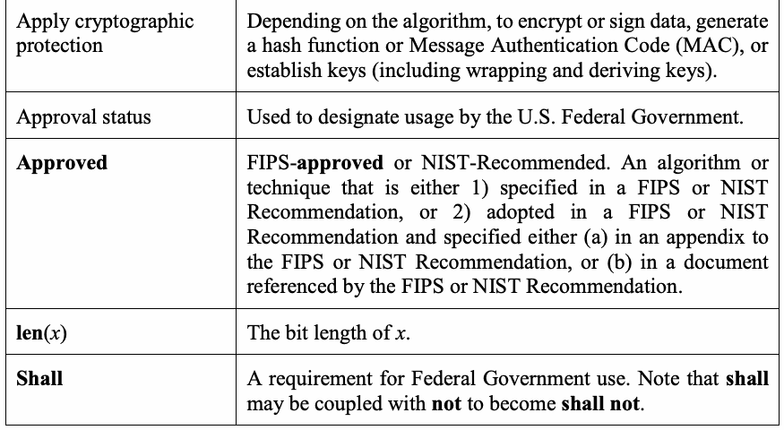
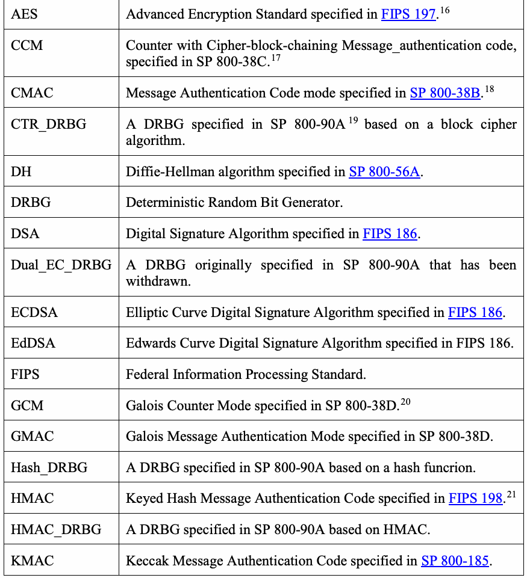
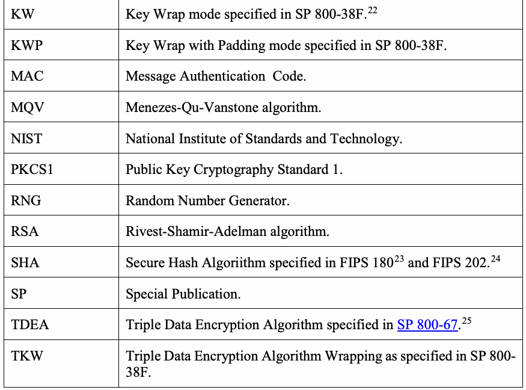
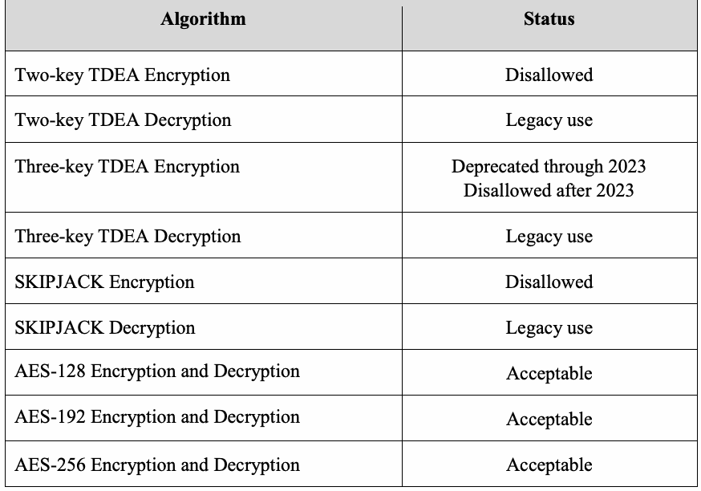
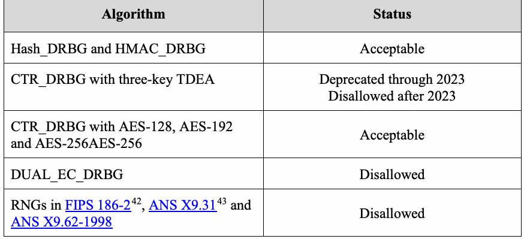
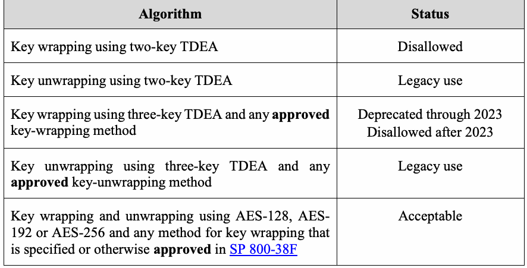
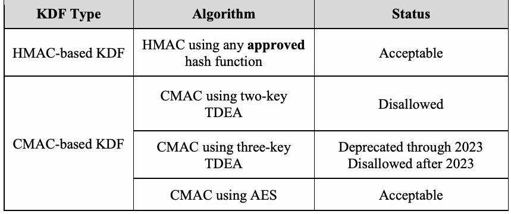
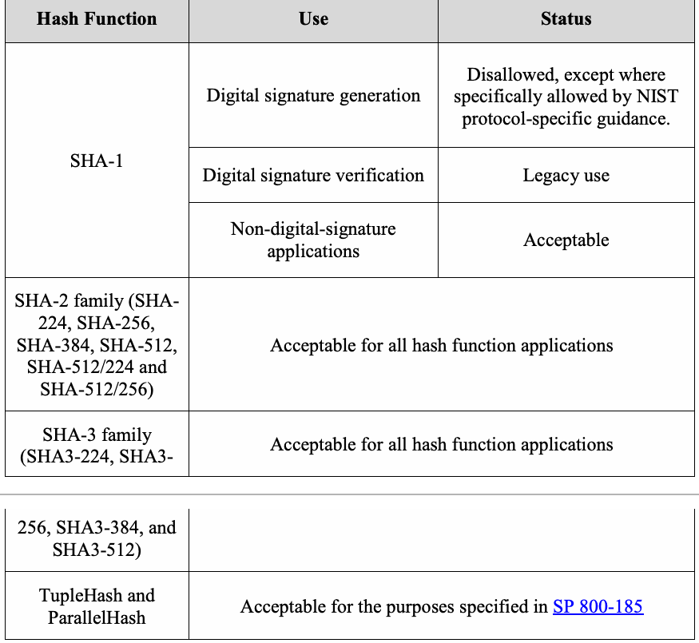

NIST Special Publication · PDF 原文抽出
Transitioning the Use of Cryptographic Algorithms and Key Lengths
暗号アルゴリズムおよび鍵長の使用の移行
NIST SP 800-131A Rev. 2（Transitioning the Use of Cryptographic Algorithms and Key Lengths）の英文と日本語訳を段落ごとに並べた閲覧用ページです。暗号アルゴリズムと鍵長の移行に関する指針です。 翻訳は非公式です。要件の確認にはNIST の正式版 PDFを参照してください。
PDF から抽出した原文は原本との照合待ちです。
本文の数式はLaTeXの構造からKaTeXで表示しています。
NIST Special Publication 800-131A Revision 2
NIST Special Publication 800-131A 改訂第2版
Transitioning the Use of Cryptographic Algorithms and Key Lengths
暗号アルゴリズムおよび鍵長の使用の移行
Elaine Barker
Allen Roginsky
エレイン・バーカー
アレン・ロジンスキー
This publication is available free of charge from: https://doi.org/10.6028/NIST.SP.800-131Ar2
本刊行物は以下より無料で入手可能である: https://doi.org/10.6028/NIST.SP.800-131Ar2
C O M P U T E R S E C U R I T Y
コンピュータセキュリティ
NISTロゴ
NIST Special Publication 800-131A Revision 2
NIST Special Publication 800-131A 改訂第2版
Transitioning the Use of Cryptographic Algorithms and Key Lengths
暗号アルゴリズムおよび鍵長の使用の移行
Elaine Barker
Allen Roginsky
Computer Security Division
Information Technology Laboratory
エレイン・バーカー
アレン・ロジンスキー
コンピュータセキュリティ部門
情報技術研究所
This publication is available free of charge from: https://doi.org/10.6028/NIST.SP.800-131Ar2
本刊行物は以下より無料で入手可能である: https://doi.org/10.6028/NIST.SP.800-131Ar2
March 2019
2019年3月
米国商務省の紋章
U.S. Department of Commerce Wilbur L. Ross, Jr., Secretary
米国商務省 ウィルバー・L・ロス・ジュニア長官
National Institute of Standards and Technology Walter Copan, NIST Director and Under Secretary of Commerce for Standards and Technology
米国国立標準技術研究所 ウォルター・コパン、NIST所長 兼 標準・技術担当商務次官
Authority
権限
This publication has been developed by NIST in accordance with its statutory responsibilities under the Federal Information Security Modernization Act (FISMA) of 2014, 44 U.S.C. § 3551 et seq., Public Law (P.L.) 113-283. NIST is responsible for developing information security standards and guidelines, including minimum requirements for federal information systems, but such standards and guidelines shall not apply to national security systems without the express approval of appropriate federal officials exercising policy authority over such systems. This guideline is consistent with the requirements of the Office of Management and Budget (OMB) Circular A-130.
本刊行物は、2014年連邦情報セキュリティ近代化法（FISMA）、44 U.S.C. § 3551 et seq.、公法（P.L.）113-283に基づく法定責任に従ってNISTにより作成された。NISTは、連邦情報システムに対する最低限の要件を含む情報セキュリティ標準およびガイドラインを策定する責任を負っているが、そのような標準およびガイドラインは、国家安全保障システムに対して政策権限を行使する適切な連邦職員の明示的な承認がない限り、国家安全保障システムには適用されないものとする。本ガイドラインは、行政管理予算局（OMB）Circular A-130の要件と整合している。
Nothing in this publication should be taken to contradict the standards and guidelines made mandatory and binding on federal agencies by the Secretary of Commerce under statutory authority. Nor should these guidelines be interpreted as altering or superseding the existing authorities of the Secretary of Commerce, Director of the OMB, or any other federal official. This publication may be used by nongovernmental organizations on a voluntary basis and is not subject to copyright in the United States. Attribution would, however, be appreciated by NIST.
本刊行物のいかなる記述も、商務長官が法定権限に基づき連邦機関に対して義務付け、拘束力を持たせた標準およびガイドラインに矛盾するものと解釈されるべきではない。また、本ガイドラインが、商務長官、OMB長官、またはその他の連邦職員の既存の権限を変更またはこれに優先するものと解釈されるべきでもない。本刊行物は非政府組織が自発的に使用することができ、米国内において著作権の対象とはならない。ただし、NISTへの帰属表示を行っていただければ幸いである。
National Institute of Standards and Technology Special Publication 800-131A Revision 2 Natl. Inst. Stand. Technol. Spec. Publ. 800-131A Rev. 2, 33 pages (March 2019) CODEN: NSPUE2
米国国立標準技術研究所 Special Publication 800-131A 改訂第2版 Natl. Inst. Stand. Technol. Spec. Publ. 800-131A Rev. 2, 33ページ（2019年3月） CODEN: NSPUE2
This publication is available free of charge from: https://doi.org/10.6028/NIST.SP.800-131Ar2
本刊行物は以下より無料で入手可能である: https://doi.org/10.6028/NIST.SP.800-131Ar2
Certain commercial entities, equipment, or materials may be identified in this document in order to describe an experimental procedure or concept adequately. Such identification is not intended to imply recommendation or endorsement by NIST, nor is it intended to imply that the entities, materials, or equipment are necessarily the best available for the purpose.
実験手順または概念を適切に説明するために、本文書内で特定の営利団体、機器、または材料を特定する場合がある。そのような特定は、NISTによる推奨や支持を意味することを意図したものではなく、またそれらの団体、材料、または機器が必ずしもその目的に対して利用可能な最善のものであることを意味することを意図したものでもない。
There may be references in this publication to other publications currently under development by NIST in accordance with its assigned statutory responsibilities. The information in this publication, including concepts and methodologies, may be used by federal agencies even before the completion of such companion publications. Thus, until each publication is completed, current requirements, guidelines, and procedures, where they exist, remain operative. For planning and transition purposes, federal agencies may wish to closely follow the development of these new publications by NIST.
本刊行物には、割り当てられた法定責任に従ってNISTが現在策定中である他の刊行物への言及が含まれている場合がある。概念や方法論を含む本刊行物の情報は、そうした関連刊行物の完成前であっても、連邦機関が使用してよい。したがって、各刊行物が完成するまでは、現行の要件、ガイドライン、および手順は、それらが存在する場合、引き続き有効である。計画および移行のために、連邦機関はNISTによるこれら新規刊行物の策定状況を注視するとよい。
Organizations are encouraged to review all draft publications during public comment periods and provide feedback to NIST. All NIST Computer Security Division publications, other than the ones noted above, are available at https://csrc.nist.gov/publications.
各組織は、パブリックコメント期間中にすべてのドラフト刊行物をレビューし、NISTにフィードバックを提供することが奨励される。上記以外のNISTコンピュータセキュリティ部門のすべての刊行物は、https://csrc.nist.gov/publications から入手できる。
Comments on this publication may be submitted to:
本刊行物に関するコメントは、以下に提出することができる：
National Institute of Standards and Technology Attn: Computer Security Division, Information Technology Laboratory 100 Bureau Drive (Mail Stop 8930) Gaithersburg, MD 20899-8930 Email: CryptoTransitions@nist.gov
米国国立標準技術研究所（National Institute of Standards and Technology） 宛先：コンピュータセキュリティ部門、情報技術研究所 100 Bureau Drive (Mail Stop 8930) Gaithersburg, MD 20899-8930 Email: CryptoTransitions@nist.gov
All comments are subject to release under the Freedom of Information Act (FOIA)
すべてのコメントは、情報自由法（FOIA）に基づく開示の対象となる
Reports on Computer Systems Technology
コンピュータシステム技術に関する報告書
The Information Technology Laboratory (ITL) at the National Institute of Standards and Technology (NIST) promotes the U.S. economy and public welfare by providing technical leadership for the Nation’s measurement and standards infrastructure. ITL develops tests, test methods, reference data, proof of concept implementations, and technical analyses to advance the development and productive use of information technology. ITL’s responsibilities include the development of management, administrative, technical, and physical standards and guidelines for the cost-effective security and privacy of other than national security-related information in federal information systems. The Special Publication 800-series reports on ITL’s research, guidelines, and outreach efforts in information system security, and its collaborative activities with industry, government, and academic organizations.
米国国立標準技術研究所（NIST）の情報技術研究所（ITL）は、米国の測定および標準インフラストラクチャに対する技術的リーダーシップを提供することにより、米国経済と公共の福祉を促進している。ITLは、情報技術の開発および生産的な利用を促進するため、テスト、テスト方法、参照データ、概念実証実装、ならびに技術分析を開発している。ITLの責務には、連邦政府の情報システムにおける国家安全保障関連以外の情報に対する費用対効果の高いセキュリティおよびプライバシーのための、管理的、運営的、技術的、および物理的な標準とガイドラインの開発が含まれる。Special Publication 800シリーズは、情報システムセキュリティにおけるITLの研究、ガイドライン、およびアウトリーチ活動、ならびに産業界、政府、学術機関との共同活動について報告している。
Abstract
概要
The National Institute of Standards and Technology (NIST) provides cryptographic key management guidance for defining and implementing appropriate key management procedures, using algorithms that adequately protect sensitive information, and planning ahead for possible changes in the use of cryptography because of algorithm breaks or the availability of more powerful computing techniques. NIST Special Publication (SP) 800-57, Part 1, Recommendation for Key Management: General, includes a general approach for transitioning from one algorithm or key length to another. This Recommendation (SP 800-131A) provides more specific guidance for transitions to the use of stronger cryptographic keys and more robust algorithms.
米国国立標準技術研究所（NIST）は、適切な鍵管理手順を定義および実装し、機微情報を適切に保護するアルゴリズムを使用し、アルゴリズムの解読やより強力なコンピューティング技術の利用可能性による暗号利用の変更可能性に備えて事前に計画を立てるための、暗号鍵管理ガイダンスを提供している。NIST Special Publication (SP) 800-57, Part 1, Recommendation for Key Management: Generalには、あるアルゴリズムまたは鍵長から別のアルゴリズムまたは鍵長へと移行するための一般的なアプローチが含まれている。本勧告（SP 800-131A）は、より強力な暗号鍵およびより堅牢なアルゴリズムの使用への移行に関する、より具体的なガイダンスを提供する。
Keywords
キーワード
cryptographic algorithm; digital signatures; encryption; hash function; key agreement; key derivation functions; key management; key transport; key wrapping; message authentication codes; post-quantum algorithms; random number generation; security strength; transition.
暗号アルゴリズム; デジタル署名; 暗号化; ハッシュ関数; 鍵合意; 鍵導出関数; 鍵管理; 鍵トランスポート; 鍵ラッピング; メッセージ認証コード; ポスト量子アルゴリズム; 乱数生成; セキュリティ強度; 移行。
Acknowledgments
謝辞
The authors would like to specifically acknowledge the assistance of the following NIST employees in developing this revision of SP 800-131A: Lily Chen, Morris Dworkin, Sharon Keller, Kerry McKay, Andrew Regenscheid and Apostol Vassilev.
著者らは、SP 800-131Aの本改訂版の作成における以下のNIST職員の支援に特に謝意を表する：Lily Chen、Morris Dworkin、Sharon Keller、Kerry McKay、Andrew Regenscheid、Apostol Vassilev。
Table of Contents
目次
1 INTRODUCTION ................................................................................................... 1
1 はじめに ................................................................................................... 1
1.1 Background and Purpose ....................................................................................................................... 1
1.1 背景と目的 ....................................................................................................................... 1
1.2 Useful Terms for Understanding this Recommendation ............................................................ 2
1.2 本勧告を理解するための有用な用語 ............................................................ 2
1.2.1 Security Strengths ........................................................................................................................................ 2
1.2.1 セキュリティ強度 ........................................................................................................................................ 2
1.2.2 General Definitions and Abbreviations .............................................................................................. 3
1.2.2 一般的な定義と略語 .............................................................................................. 3
1.2.3 Definition of Status Approval Terms ................................................................................................... 5
1.2.3 ステータス承認用語の定義 ................................................................................................... 5
2 ENCRYPTION AND DECRYPTION USING BLOCK CIPHER ALGORITHMS ................... 6
2 ブロック暗号アルゴリズムを用いた暗号化および復号 ................... 6
3 DIGITAL SIGNATURES .......................................................................................... 8
3 デジタル署名 .......................................................................................... 8
4 RANDOM BIT GENERATION ............................................................................... 11
4 乱数ビット生成 ............................................................................... 11
5 KEY AGREEMENT USING DIFFIE-HELLMAN AND MQV ......................................... 12
5 DIFFIE-HELLMANおよびMQVを用いた鍵合意 ......................................... 12
6 KEY AGREEMENT AND KEY TRANSPORT USING RSA ........................................... 14
6 RSAを用いた鍵合意および鍵トランスポート ........................................... 14
7 KEY WRAPPING ................................................................................................. 15
7 鍵ラッピング ................................................................................................. 15
8 DERIVING ADDITIONAL KEYS FROM A CRYPTOGRAPHIC KEY .............................. 16
8 暗号鍵からの追加の鍵の導出 .............................. 16
9 HASH FUNCTIONS .............................................................................................. 17
9 ハッシュ関数 .............................................................................................. 17
10 MESSAGE AUTHENTICATION CODES (MACS) ...................................................... 19
10 メッセージ認証コード (MACS) ...................................................... 19
APPENDIX A: REFERENCES ......................................................................................... 22
付録A: 参考文献 ......................................................................................... 22
APPENDIX B: CHANGE HISTORY ................................................................................. 25
付録B: 改訂履歴 ................................................................................. 25
1 Introduction
1 はじめに
1.1 Background and Purpose
1.1 背景と目的
At the beginning of the 21st century, the National Institute of Standards and Technology (NIST) began the task of providing cryptographic key management guidance. This guidance was based on the lessons learned over many years of dealing with key management issues and is intended to 1) encourage the specification and implementation of appropriate key management procedures, 2) use algorithms that adequately protect sensitive information, and 3) plan for possible changes in the use of cryptographic algorithms, including any migration to different algorithms. The third item addresses not only the possibility of new cryptanalysis, but also the increasing power of classical computing technology and the potential emergence of quantum computers.
21世紀初頭、米国立標準技術研究所（NIST）は暗号鍵管理に関するガイダンスを提供する取り組みを開始した。このガイダンスは、長年にわたり鍵管理の課題に対処してきた教訓に基づいており、1) 適切な鍵管理手順の仕様策定および実装を促進すること、2) 機微情報を適切に保護するアルゴリズムを使用すること、3) 異なるアルゴリズムへの移行を含め、暗号アルゴリズムの使用において起こり得る変更を計画することを目的としている。第3の項目は、新たな暗号解読の可能性だけでなく、古典的コンピューティング技術の性能向上や、量子コンピュータが出現する可能性にも対処している。
General key-management guidance, including the general approach for transitioning from one algorithm or key length to another, is addressed in Part 1 of Special Publication (SP) 800-571.
あるアルゴリズムや鍵長から別のアルゴリズムや鍵長への移行に関する一般的なアプローチを含む、鍵管理全般に関するガイダンスは、特別刊行物（SP）800-571のPart 1で扱われている。
This document (SP 800-131A) is intended to provide more detail about the transitions associated with the use of cryptography by Federal Government agencies for the protection of sensitive, but unclassified information. The document addresses the use of algorithms and key lengths specified in Federal Information Processing Standards (FIPS) and NIST Special Publications (SPs). Non-governmental organizations may voluntarily choose to comply with this Recommendation.
本文書（SP 800-131A）は、連邦政府機関による機微ではあるが非機密の情報の保護を目的とした暗号の使用に伴う移行について、より詳細な情報を提供することを目的としている。本文書は、連邦情報処理規格（FIPS）およびNIST特別刊行物（SP）で規定されているアルゴリズムおよび鍵長の使用について扱っている。非政府組織は、自発的に本勧告に準拠することを選択してもよい。
NIST recognizes that large-scale quantum computers, when available, will threaten the security of NIST-approved public key algorithms. In particular, NIST-approved digital signature schemes, key agreement using DH2 and MQV3, and key agreement and key transport using RSA4 may need to be replaced with secure quantum-resistant (or “post-quantum”) counterparts. At the time that this SP 800-131A revision was published, NIST was undergoing a process to select post-quantum cryptographic algorithms for standardization. This process is a multi-year project; when these new standards are available, this Recommendation will be updated with the guidance for the transition to post-quantum cryptographic standards. NIST encourages implementers to plan for cryptographic agility to facilitate transitions to quantum-resistant algorithms where needed in the future. Information on the post-quantum project is available at https://csrc.nist.gov/projects/post-quantum-cryptography.
NISTは、大規模な量子コンピュータが実現した場合、NIST承認の公開鍵アルゴリズムの安全性が脅かされると認識している。特に、NIST承認のデジタル署名方式、DH2およびMQV3を使用した鍵合意、ならびにRSA4を使用した鍵合意および鍵トランスポートは、安全な耐量子（または「ポスト量子」）の代替手段に置き換える必要がある可能性がある。本SP 800-131A改訂版が発行された時点で、NISTは標準化のためのポスト量子暗号アルゴリズムを選定するプロセスを進めていた。このプロセスは複数年にわたるプロジェクトであり、これらの新しい標準が利用可能になった時点で、本勧告はポスト量子暗号標準への移行のためのガイダンスによって更新される予定である。NISTは実装者に対し、将来必要に応じて耐量子アルゴリズムへの移行を容易にできるよう、暗号アジリティを計画することを推奨している。ポスト量子プロジェクトに関する情報は、https://csrc.nist.gov/projects/post-quantum-cryptography で入手可能である。
SP 800-131A was originally published in January 2011 and revised in 2015. This revision updates the transition guidance provided in the 2015 version; these changes are listed in Appendix B. The most significant difference is the schedule for retiring the Triple Data Encryption Algorithm5 (TDEA), the inclusion of safe-prime groups for finite field Diffie-Hellman and MQV, and the inclusion of KMAC6 for Message Authentication Code (MAC) generation.
SP 800-131Aは当初2011年1月に発行され、2015年に改訂された。本改訂版は2015年版で提供された移行ガイダンスを更新するものであり、これらの変更点は付録Bに記載されている。最も重要な相違点は、Triple Data Encryption Algorithm5（TDEA）の廃止スケジュール、有限体Diffie-HellmanおよびMQV用の安全素数グループの追加、ならびにメッセージ認証コード（MAC）生成のためのKMAC6の追加である。
SP 800-57, Part 1 includes a transition to a security strength of 128 bits in 2030; in some cases, the transition would be addressed by an increase in key sizes. However, this revision of SP 800-131A does not address this transition, but a future revision will include these considerations as well as transitions to post-quantum algorithms. NIST encourages implementers, protocol developers and organizations to prepare for these transitions by planning for cryptographic agility.
SP 800-57, Part 1には、2030年に128ビットのセキュリティ強度へ移行することが含まれている。場合によっては、この移行は鍵サイズの拡大によって対処されることになる。しかしながら、SP 800-131Aの本改訂版ではこの移行を扱っておらず、将来の改訂版において、ポスト量子アルゴリズムへの移行とともにこれらの検討事項が含まれる予定である。NISTは、実装者、プロトコル開発者、および組織に対し、暗号アジリティを計画することによってこれらの移行に備えることを推奨している。
SP 800-57, Part 1 also provides guidance about protecting information past 2030. Section 5.6.4 of that document advises selecting algorithms and key sizes that are expected to be secure for the entire security life of the protected data. This is particularly important when nearing algorithm transition dates. For example, if the data to be encrypted has a security life of 15 years, then protection at a security strength of 112 bits will not be sufficient, since the 15-year period extends beyond 2030.
SP 800-57, Part 1は、2030年を超えて情報を保護することに関するガイダンスも提供している。同文書のセクション5.6.4では、保護対象データのセキュリティ寿命全体にわたって安全であると期待されるアルゴリズムおよび鍵サイズを選択するよう助言している。これは、アルゴリズムの移行日が近づいている場合に特に重要である。例えば、暗号化されるデータのセキュリティ寿命が15年である場合、その15年の期間が2030年を超えるため、112ビットのセキュリティ強度による保護では不十分となる。
1.2 Useful Terms for Understanding this Recommendation
1.2 本勧告を理解するための有用な用語
1.2.1 Security Strengths
1.2.1 セキュリティ強度
Some of the guidance provided in SP 800-57 includes the definition of an estimated maximum security strength (hereafter shortened to just "security strength"), the association of the algorithms and key lengths with these security strengths, and a projection of the time frames during which the algorithms and key lengths could be expected to provide adequate security. Note that the length of the cryptographic keys is an integral part of these determinations.
SP 800-57で提供されているガイダンスの一部には、推定最大セキュリティ強度（以下、単に"セキュリティ強度"と略記）の定義、これらのセキュリティ強度とアルゴリズムおよび鍵長との関連付け、ならびにそれらのアルゴリズムおよび鍵長が適切なセキュリティを提供すると期待され得る期間の予測が含まれている。なお、暗号鍵の長さは、これらの決定の不可欠な一部であることに注意されたい。
In SP 800-57, the security strength provided by an algorithm with a particular key length7 is measured in bits and is a measure of the difficulty of subverting the cryptographic protection that is provided by the algorithm and key. An estimated security strength for each algorithm is provided in SP 800-57. This is the security strength that an algorithm with a particular key length can provide, given that the key used with that algorithm has sufficient entropy8.
SP 800-57において、特定の鍵長7を持つアルゴリズムによって提供されるセキュリティ強度はビット単位で測定され、そのアルゴリズムと鍵によって提供される暗号保護を破ることの困難度の尺度である。各アルゴリズムの推定セキュリティ強度はSP 800-57で提供されている。これは、そのアルゴリズムで使用される鍵が十分なエントロピー8を有していることを前提として、特定の鍵長を持つアルゴリズムが提供できるセキュリティ強度である。
Note: The term "security strength" refers to the classical security strength − a measure of the difficulty of subverting the cryptographic protection (e.g., discovering the key) using classical computers. When post-quantum cryptography is introduced in NIST standards, quantum security strength, i.e. the difficulty of subverting the protection using quantum computers, will be defined.
注："セキュリティ強度"という用語は、古典的セキュリティ強度 − 古典コンピュータを用いて暗号保護を破る（例：鍵を発見する）困難度の尺度 − を指す。ポスト量子暗号がNIST標準に導入される際には、量子セキュリティ強度、すなわち量子コンピュータを用いて保護を破ることの困難度が定義される予定である。
The appropriate (classical) security strength to be used to protect data depends on the sensitivity of the data being protected and needs to be determined by the owner of that data (e.g., a person or an organization). For the Federal Government, a security strength of at least 112 bits is required at this time for applying cryptographic protection (e.g., for encrypting or signing data). Note that prior to 2014, a security strength of at least 80 bits was required for applying these protections, and the transitions in this document reflect this change to a required security strength of at least 112 bits. However, a large quantity of data was protected at the 80-bit security strength and may need to be processed (e.g., decrypted). The processing of this already-protected data at the lower security strength is allowed, but a certain amount of risk must be accepted9.
データの保護に使用される適切な（古典的）セキュリティ強度は、保護されるデータの機微度に依存し、そのデータの所有者（例：個人または組織）によって決定される必要がある。連邦政府においては、現時点で、暗号保護を適用するため（例：データの暗号化または署名のため）に少なくとも112ビットのセキュリティ強度が要求されている。なお、2014年より前は、これらの保護を適用するために少なくとも80ビットのセキュリティ強度が要求されており、本文書における移行は、要求されるセキュリティ強度が少なくとも112ビットへ変更されたことを反映していることに注意されたい。しかしながら、大量のデータが80ビットのセキュリティ強度で保護されており、処理（例：復号）が必要となる場合がある。より低いセキュリティ強度で既に保護されているこのデータの処理は認められているが、一定のリスクを受け入れなければならない9。
Specific key lengths are provided in FIPS 18610 for digital signatures, in SP 800-56A11 for finite field Diffie-Hellman (DH) and MQV key agreement, and in SP 800-56B12 for RSA key agreement and key transport. SP 800-18613 provides elliptic curves for elliptic curve digital signatures and elliptic curve DH and MQV key agreement; the elliptic curve specifications provide the key lengths associated with each curve. These key lengths are strongly recommended for interoperability, and their estimated security strengths are provided in SP 800-57. However, other key lengths are commonly used. The security strengths associated with these key lengths may be determined using the formula provided in Section 7.5 of the FIPS 14014 Implementation Guideline.15
具体的な鍵長は、デジタル署名についてはFIPS 18610で、有限体Diffie-Hellman（DH）およびMQV鍵合意についてはSP 800-56A11で、RSA鍵合意および鍵トランスポートについてはSP 800-56B12で規定されている。SP 800-18613では、楕円曲線デジタル署名ならびに楕円曲線DHおよびMQV鍵合意のための楕円曲線が規定されており、楕円曲線の仕様によって各曲線に関連付けられた鍵長が提供されている。これらの鍵長は相互運用性の観点から強く推奨されており、その推定セキュリティ強度はSP 800-57で示されている。しかしながら、他の鍵長も一般的に使用されている。これらの鍵長に関連付けられたセキュリティ強度は、FIPS 14014 Implementation Guideline15のセクション7.5に記載された算式を用いて決定することができる。
1.2.2 General Definitions and Abbreviations
1.2.2 一般的な定義および略語
| Apply cryptographic protection | Depending on the algorithm, to encrypt or sign data, generate a hash function or Message Authentication Code (MAC), or establish keys (including wrapping and deriving keys). |
| Approval status | Used to designate usage by the U.S. Federal Government. |
| Approved | FIPS-approved or NIST-Recommended. An algorithm or technique that is either 1) specified in a FIPS or NIST Recommendation, or 2) adopted in a FIPS or NIST Recommendation and specified either (a) in an appendix to the FIPS or NIST Recommendation, or (b) in a document referenced by the FIPS or NIST Recommendation. |
| len(x) | The bit length of x. |
| Shall | A requirement for Federal Government use. Note that shall may be coupled with not to become shall not. |
原本PDFの抜粋画像

| 暗号保護の適用 | アルゴリズムに応じて、データの暗号化もしくは署名、ハッシュ関数またはメッセージ認証コード（MAC）の生成、あるいは鍵の確立（鍵のラッピングおよび導出を含む）を行うこと。 |
| 承認ステータス | 米国連邦政府による使用を指定するために使用される。 |
| 承認済み | FIPS承認またはNIST推奨。1）FIPSもしくはNIST勧告で規定されている、または2）FIPSもしくはNIST勧告で採用され、かつ（a）FIPSもしくはNIST勧告の付録、または（b）FIPSもしくはNIST勧告が参照する文書のいずれかで規定されているアルゴリズムまたは技術。 |
| len(x) | xのビット長。 |
| Shall | 連邦政府による使用のための要件。shallはnotと結合してshall notとなる場合があることに注意。 |
| AES | Advanced Encryption Standard specified in FIPS 197.16 |
| CCM | Counter with Cipher-block-chaining Message_authentication code, specified in SP 800-38C.17 |
| CMAC | Message Authentication Code mode specified in SP 800-38B.18 |
| CTR_DRBG | A DRBG specified in SP 800-90A19 based on a block cipher algorithm. |
| DH | Diffie-Hellman algorithm specified in SP 800-56A. |
| DRBG | Deterministic Random Bit Generator. |
| DSA | Digital Signature Algorithm specified in FIPS 186. |
| Dual_EC_DRBG | A DRBG originally specified in SP 800-90A that has been withdrawn. |
| ECDSA | Elliptic Curve Digital Signature Algorithm specified in FIPS 186. |
| EdDSA | Edwards Curve Digital Signature Algorithm specified in FIPS 186. |
| FIPS | Federal Information Processing Standard. |
| GCM | Galois Counter Mode specified in SP 800-38D.20 |
| GMAC | Galois Message Authentication Mode specified in SP 800-38D. |
| Hash_DRBG | A DRBG specified in SP 800-90A based on a hash funcrion. |
| HMAC | Keyed Hash Message Authentication Code specified in FIPS 198.21 |
| HMAC_DRBG | A DRBG specified in SP 800-90A based on HMAC. |
| KMAC | Keccak Message Authentication Code specified in SP 800-185. |
原本PDFの抜粋画像

| AES | FIPS 197で規定されている高度暗号化規格。16 |
| CCM | SP 800-38Cで規定されている暗号ブロック連鎖メッセージ認証コード付きカウンタ。17 |
| CMAC | SP 800-38Bで規定されているメッセージ認証コードモード。18 |
| CTR_DRBG | SP 800-90A19で規定されている、ブロック暗号アルゴリズムに基づくDRBG。 |
| DH | SP 800-56Aで規定されているDiffie-Hellmanアルゴリズム。 |
| DRBG | 決定論的乱数ビット生成器。 |
| DSA | FIPS 186で規定されているデジタル署名アルゴリズム。 |
| Dual_EC_DRBG | SP 800-90Aで当初規定されていたが、取り下げられたDRBG。 |
| ECDSA | FIPS 186で規定されている楕円曲線デジタル署名アルゴリズム。 |
| EdDSA | FIPS 186で規定されているエドワーズ曲線デジタル署名アルゴリズム。 |
| FIPS | 連邦情報処理規格。 |
| GCM | SP 800-38Dで規定されているガロア／カウンタモード。20 |
| GMAC | SP 800-38Dで規定されているガロアメッセージ認証モード。 |
| Hash_DRBG | SP 800-90Aで規定されている、ハッシュ関数に基づくDRBG。 |
| HMAC | FIPS 198で規定されている鍵付きハッシュメッセージ認証コード。21 |
| HMAC_DRBG | SP 800-90Aで規定されている、HMACに基づくDRBG。 |
| KMAC | SP 800-185で規定されているKeccakメッセージ認証コード。 |
| KW | Key Wrap mode specified in SP 800-38F.22 |
| KWP | Key Wrap with Padding mode specified in SP 800-38F. |
| MAC | Message Authentication Code. |
| MQV | Menezes-Qu-Vanstone algorithm. |
| NIST | National Institute of Standards and Technology. |
| PKCS1 | Public Key Cryptography Standard 1. |
| RNG | Random Number Generator. |
| RSA | Rivest-Shamir-Adelman algorithm. |
| SHA | Secure Hash Algorithm specified in FIPS 18023 and FIPS 202.24 |
| SP | Special Publication. |
| TDEA | Triple Data Encryption Algorithm specified in SP 800-67.25 |
| TKW | Triple Data Encryption Algorithm Wrapping as specified in SP 800-38F. |
原本PDFの抜粋画像

| KW | SP 800-38Fで規定されているキーラップモード。22 |
| KWP | SP 800-38Fで規定されているパディング付きキーラップモード。 |
| MAC | メッセージ認証コード。 |
| MQV | Menezes-Qu-Vanstoneアルゴリズム。 |
| NIST | 米国国立標準技術研究所。 |
| PKCS1 | 公開鍵暗号標準1。 |
| RNG | 乱数生成器。 |
| RSA | Rivest-Shamir-Adelmanアルゴリズム。 |
| SHA | FIPS 18023およびFIPS 20224で規定されているセキュアハッシュアルゴリズム。 |
| SP | 特別刊行物。 |
| TDEA | SP 800-67で規定されているトリプルデータ暗号化アルゴリズム。25 |
| TKW | SP 800-38Fで規定されているトリプルデータ暗号化アルゴリズムラッピング。 |
1.2.3 Definition of Status Approval Terms
1.2.3 承認ステータス用語の定義
The terms “acceptable”, “deprecated”, “legacy use” and "disallowed" are used throughout this Recommendation to indicate the approval status of an algorithm. The approval status for an algorithm often will also depend on the length of its key, any domain parameters and the mode or manner in which it is used.
アルゴリズムの承認ステータスを示すために、本勧告全体を通じて“acceptable”（許容）、“deprecated”（非推奨）、“legacy use”（レガシー利用）、および"disallowed"（禁止）という用語が使用されている。アルゴリズムの承認ステータスは、多くの場合、その鍵長、ドメインパラメータ（ある場合）、およびそれが使用されるモードや方法にも依存する。
•Acceptable is used to mean that the algorithm and key length in a FIPS or SP is safe to use; no security risk is currently known when used in accordance with any associated guidance. The FIPS 140 Implementation Guideline may indicate additional algorithms that are acceptable for use, but not specified in a FIPS or SP.
•Acceptable（許容）は、FIPSまたはSPにおけるアルゴリズムおよび鍵長が安全に使用できることを意味するために使用され、関連するガイダンスに従って使用される場合、現時点で知られているセキュリティリスクはない。FIPS 140 Implementation Guidelineには、FIPSまたはSPで規定されていないものの、使用が許容される追加のアルゴリズムが示されている場合がある。
•Deprecated means that the algorithm and key length may be used, but the user must accept some security risk. The term is used when discussing the key lengths or algorithms that may be used to apply cryptographic protection.
•Deprecated（非推奨）は、アルゴリズムおよび鍵長を使用することはできるが、利用者は一定のセキュリティリスクを受け入れなければならないことを意味する。この用語は、暗号保護を適用するために使用できる鍵長またはアルゴリズムについて議論する際に使用される。
•Disallowed means that the algorithm or key length is no longer allowed for applying cryptographic protection.
•Disallowed（禁止）は、暗号保護を適用するためにそのアルゴリズムまたは鍵長を使用することがもはや許可されないことを意味する。
•Legacy use means that the algorithm or key length may be used only to process already protected information (e.g., to decrypt ciphertext data or to verify a digital signature).
•Legacy use（レガシー利用）は、アルゴリズムまたは鍵長が、すでに保護された情報を処理するため（例えば、暗号文データの復号やデジタル署名の検証）にのみ使用できることを意味する。
The use of algorithms and key lengths for which the terms deprecated and legacy use are listed require that the user accept some risk26 that increases over time. If a user determines that the risk is unacceptable, then the algorithm or key length is considered disallowed from the perspective of that user. It is the responsibility of the user or the user’s organization to determine the level of risk that can be tolerated for an application and its associated data and to define any methods for mitigating those risks.
deprecated（非推奨）および legacy use（レガシー利用）という用語が記載されているアルゴリズムおよび鍵長の使用には、時間の経過とともに増大する一定のリスク26を利用者が受け入れることが求められる。利用者がそのリスクを受け入れられないと判断した場合、そのアルゴリズムまたは鍵長は、その利用者の観点からは disallowed（禁止）とみなされる。アプリケーションおよびその関連データに対して許容できるリスクのレベルを決定し、それらのリスクを軽減するための方法を定義することは、利用者または利用者の組織の責任である。
Other cryptographic terms used in this document are defined in the documents listed in Appendix A.
本書で使用されているその他の暗号用語は、付録Aに記載されている文書で定義されている。
2 Encryption and Decryption Using Block Cipher Algorithms
2 ブロック暗号アルゴリズムを使用した暗号化および復号
Encryption is a cryptographic operation that is used to provide confidentiality for sensitive information, and decryption is the inverse operation. Over time, several block cipher algorithms have been specified for use by the Federal Government:
暗号化は、機微な情報に機密性を提供するために使用される暗号操作であり、復号はその逆の操作である。これまでに、連邦政府による使用のためにいくつかのブロック暗号アルゴリズムが規定されてきた：
•The Triple Data Encryption Algorithm (TDEA) (often referred to as Triple DES) is specified in SP 800-67, and has two variations, known as two-key TDEA and three-key TDEA. Three-key TDEA is the stronger of the two variations. The latest revision of SP 800-67 disallows the use of two-key TDEA for applying cryptographic protection and restricts the use of three-key TDEA for applying cryptographic protection to no more than 220 data blocks using a single key bundle27.
•トリプルデータ暗号化アルゴリズム（TDEA）（しばしばTriple DESと呼ばれる）はSP 800-67で規定されており、2鍵TDEAおよび3鍵TDEAとして知られる2つのバリエーションがある。3鍵TDEAは、2つのバリエーションのうちより強固な方である。SP 800-67の最新改訂版は、暗号保護を適用するための2鍵TDEAの使用を禁止し、暗号保護を適用するための3鍵TDEAの使用を、単一の鍵バンドル27につき220個以下のデータブロックに制限している。
•SKIPJACK was approved in FIPS 185.28 However, approval for the use of SKIPJACK is now disallowed for applying cryptographic protection, since its security strength of 80 bits is now considered inadequate; it may still be used for processing information previously protected using SKIPJACK (e.g., for decryption).
•SKIPJACKはFIPS 185で承認された。28しかしながら、その80ビットのセキュリティ強度は現在不十分とみなされているため、暗号保護を適用するためのSKIPJACKの使用の承認は現在禁止となっている。ただし、以前にSKIPJACKを使用して保護された情報を処理するため（例えば復号のため）には、引き続き使用できる。
•AES is specified in FIPS 197 and has three key lengths: 128, 192 and 256 bits.
•AESはFIPS 197で規定されており、128、192、および256ビットの3つの鍵長を持つ。
Note that encryption and decryption using these algorithms require the use of modes of operation (see the SP 800-3829 series of publications). Some of these modes also provide authentication when performing encryption and provide verification when performing decryption on the encrypted and authenticated information (see SP 800-38C and SP 800-38D). Another authenticated encryption mode is specified for key wrapping, which is discussed in Section 7.
これらのアルゴリズムを使用した暗号化および復号には、利用モードの使用が必要であることに留意されたい（SP 800-3829シリーズの出版物を参照）。これらのモードの一部は、暗号化の実行時に認証も提供し、暗号化および認証された情報に対して復号を実行する際に検証を提供する（SP 800-38CおよびSP 800-38Dを参照）。キーラッピング用には別の認証付き暗号モードが規定されており、これについてはSection 7で論じられている。
The approval status of the block cipher encryption/decryption modes of operation are provided in Table 1.
ブロック暗号の暗号化／復号の利用モードの承認ステータスは、表1に示されている。
Table 1: Approval Status of Symmetric Algorithms Used for Encryption and Decryption
表1: 暗号化および復号に使用される共通鍵アルゴリズムの承認ステータス
| Algorithm | Status |
| Two-key TDEA Encryption | Disallowed |
| Two-key TDEA Decryption | Legacy use |
| Three-key TDEA Encryption | Deprecated through 2023 Disallowed after 2023 |
| Three-key TDEA Decryption | Legacy use |
| SKIPJACK Encryption | Disallowed |
| SKIPJACK Decryption | Legacy use |
| AES-128 Encryption and Decryption | Acceptable |
| AES-192 Encryption and Decryption | Acceptable |
| AES-256 Encryption and Decryption | Acceptable |
原本PDFの抜粋画像

| アルゴリズム | ステータス |
| 2鍵TDEA暗号化 | 禁止 |
| 2鍵TDEA復号 | レガシー利用 |
| 3鍵TDEA暗号化 | 2023年末まで非推奨 2023年より後は禁止 |
| 3鍵TDEA復号 | レガシー利用 |
| SKIPJACK暗号化 | 禁止 |
| SKIPJACK復号 | レガシー利用 |
| AES-128暗号化および復号 | 許容 |
| AES-192暗号化および復号 | 許容 |
| AES-256暗号化および復号 | 許容 |
Two-key TDEA encryption and decryption:
2鍵TDEAの暗号化および復号:
Encryption using two-key TDEA is disallowed.
2鍵TDEAによる暗号化は禁止されている。
Decryption using two-key TDEA is allowed for legacy use using the modes of operation specified in SP 800-38A.
2鍵TDEAによる復号は、SP 800-38Aで規定されている利用モードを用いたレガシー利用として許可されている。
Three-key TDEA encryption and decryption:
3鍵TDEAの暗号化および復号:
Effective as of the final publication of this revision of SP 800-131A, encryption using three-key TDEA is deprecated through December 31, 2023 using the approved encryption modes. Note that SP 800-67 specifies a restriction on the protection of no more than 220 data blocks using the same single key bundle. Three-key TDEA may continue to be used for encryption in existing applications but shall not be used for encryption in new applications.
SP 800-131Aの本改訂版の最終公開の発効日以降、承認された暗号化モードを使用した3鍵TDEAによる暗号化は、2023年12月31日まで廃止予定とされる。なお、SP 800-67では、同一の単一鍵バンドルを使用して保護するデータブロック数を220以下とする制限が規定されていることに注意されたい。3鍵TDEAは、既存のアプリケーションにおける暗号化のために引き続き使用できるが、新規アプリケーションにおける暗号化には使用してはならない。
After December 31, 2023, three-key TDEA is disallowed for encryption unless specifically allowed by other NIST guidance.
2023年12月31日より後は、他のNISTガイダンスで明確に許可されている場合を除き、暗号化における3鍵TDEAは禁止となる。
Decryption using three-key TDEA is allowed for legacy use.
3鍵TDEAを使用した復号は、レガシー利用として許可される。
SKIPJACK encryption and decryption:
SKIPJACKの暗号化および復号:
The use of SKIPJACK for encryption is disallowed.
暗号化におけるSKIPJACKの使用は不許可である。
The use of SKIPJACK for decryption is allowed for legacy use.
復号におけるSKIPJACKの使用は、レガシー使用として許可される。
AES encryption and decryption:
AESの暗号化および復号:
The use of AES-128, AES-192, AES-256 is acceptable for encryption and decryption using the approved modes in the SP 800-38 series of publications.
AES-128、AES-192、AES-256の使用は、SP 800-38シリーズの刊行物で承認されたモードを使用した暗号化および復号において許容可能である。
3 Digital Signatures
3 デジタル署名
Digital signatures are used to provide assurance of origin authentication and data integrity. These assurances are sometimes extended to provide assurance that a party in a dispute (the signatory) cannot repudiate (i.e., refute) the validity of a signed document; this is commonly known as non-repudiation. The digital signature algorithms are specified in FIPS 186.
デジタル署名は、発信元認証およびデータ完全性の保証を提供するために使用される。これらの保証は、紛争における当事者（署名者）が署名された文書の有効性を否認（すなわち反論）できないという保証を提供するために拡張されることがある。これは一般に否認防止として知られている。デジタル署名アルゴリズムはFIPS 186で規定されている。
• DSA: DSA keys are generated and used with domain parameters \(p\), \(q\) and \(g\), where prime \(p\) defines the finite field \(\mathit{GF}(p)\) and prime \(q\) is the order of a subgroup of \(\mathit{GF}(p)^*\) generated by \(g\). The security strength that can be provided by the algorithm depends on the length of \(p\) (\(L\)), the length of \(q\) (\(N\)), and the proper generation of the domain parameters used.
• DSA：DSA鍵は、ドメインパラメータ\(p\)、\(q\)、および\(g\)とともに生成および使用される。ここで、素数\(p\)は有限体\(\mathit{GF}(p)\)を定義し、素数\(q\)は、\(\mathit{GF}(p)^*\)の部分群（\(g\)によって生成される）の位数である。このアルゴリズムによって提供できるセキュリティ強度は、\(p\)の長さ（\(L\)）、\(q\)の長さ（\(N\)）、および使用されるドメインパラメータの適切な生成に依存する。
•Elliptic Curve-based Digital Signatures (ECDSA and EdDSA 30): Keys are generated and used with respect to domain parameters that define elliptic curves. The length of n (the domain parameter that specifies the order of the base point G) is used to determine the security strength that can be provided by a properly generated curve. Elliptic curves used for the generation of digital signatures are provided in SP 800-186.31
•楕円曲線に基づくデジタル署名（ECDSAおよびEdDSA 30）：鍵は、楕円曲線を定義するドメインパラメータに関して生成および使用される。n（基底点Gの位数を指定するドメインパラメータ）の長さは、適切に生成された曲線によって提供できるセキュリティ強度を決定するために使用される。デジタル署名の生成に使用される楕円曲線は、SP 800-186で提供されている。31
•RSA: RSA keys are generated with respect to a modulus n that is the product of two primes p and q, which is used to determine the security strength that can be provided by a digital signature.
•RSA：RSA鍵は、2つの素数pとqの積であるモジュラスnに関して生成され、このモジュラスnはデジタル署名によって提供できるセキュリティ強度を決定するために使用される。
The security strength provided by a digital signature generation process is no greater than the minimum of 1) the security strength that the digital signature algorithm can support with a given key length and any domain parameters used, 2) the security strength (with respect to collision resistance) supported by the cryptographic hash function that is used to hash the data to be signed. The security strength also depends on the method used for key generation and any other parameters used during the process. The estimated security strength that can be provided by a given algorithm and key length is provided in SP 800-57.
デジタル署名生成プロセスによって提供されるセキュリティ強度は、1) 与えられた鍵長および使用される任意のドメインパラメータにおいてデジタル署名アルゴリズムがサポートできるセキュリティ強度、2) 署名対象のデータをハッシュするために使用される暗号学的ハッシュ関数によってサポートされる（衝突耐性に関する）セキュリティ強度のうち、最小値を超えることはない。セキュリティ強度は、鍵生成に使用される方法や、そのプロセス中に使用されるその他のパラメータにも依存する。所与のアルゴリズムおよび鍵長によって提供できる推定セキュリティ強度は、SP 800-57で提供されている。
Discussions of the hash functions used during the generation of digital signatures are provided in Section 9.
デジタル署名の生成時に使用されるハッシュ関数に関する説明は、セクション9で提供されている。
Table 2 provides the approval status of the algorithms and key lengths used for the generation and verification of digital signatures in accordance with FIPS 186.
表2は、FIPS 186に従ってデジタル署名の生成および検証に使用されるアルゴリズムと鍵長の承認ステータスを示している。
Table 2: Approval Status of Algorithms Used for Digital Signature Generation and Verification
表2: デジタル署名の生成および検証に使用されるアルゴリズムの承認ステータス
| Digital Signature Process | Domain Parameters | Status |
| Digital Signature Generation | \(< 112\) bits of security strength: DSA: \((L, N) \ne (2048, 224), (2048, 256)\) or \((3072, 256)\) ECDSA: \(\operatorname{\mathbf{len}}(n) < 224\) RSA: \(\operatorname{\mathbf{len}}(n) < 2048\) | Disallowed |
| \(\ge 112\) bits of security strength: DSA: \((L, N) = (2048, 224), (2048, 256)\) or \((3072, 256)\) ECDSA or EdDSA: \(\operatorname{\mathbf{len}}(n) \ge 224\) RSA: \(\operatorname{\mathbf{len}}(n) \ge 2048\) | Acceptable | |
| Digital Signature Verification | \(< 112\) bits of security strength: DSA32: \(((512 \le L < 2048) \text{ or } (160 \le N < 224))\) ECDSA: \(160 \le \operatorname{\mathbf{len}}(n) < 224\) RSA: \(1024 \le \operatorname{\mathbf{len}}(n) < 2048\) | Legacy use |
| \(\ge 112\) bits of security strength: DSA: \((L, N) = (2048, 224), (2048, 256)\) or \((3072, 256)\) ECDSA and EdDSA: \(\operatorname{\mathbf{len}}(n) \ge 224\) RSA: \(\operatorname{\mathbf{len}}(n) \ge 2048\) | Acceptable |
| デジタル署名プロセス | ドメインパラメータ | ステータス |
| デジタル署名生成 | \(< 112\)ビットのセキュリティ強度: DSA: \((L, N) \ne (2048, 224), (2048, 256)\) または \((3072, 256)\) ECDSA: \(\operatorname{\mathbf{len}}(n) < 224\) RSA: \(\operatorname{\mathbf{len}}(n) < 2048\) | 不許可 |
| \(\ge 112\)ビットのセキュリティ強度: DSA: \((L, N) = (2048, 224), (2048, 256)\) または \((3072, 256)\) ECDSAまたはEdDSA: \(\operatorname{\mathbf{len}}(n) \ge 224\) RSA: \(\operatorname{\mathbf{len}}(n) \ge 2048\) | 許容 | |
| デジタル署名検証 | \(< 112\)ビットのセキュリティ強度: DSA32: \(((512 \le L < 2048) \text{ または } (160 \le N < 224))\) ECDSA: \(160 \le \operatorname{\mathbf{len}}(n) < 224\) RSA: \(1024 \le \operatorname{\mathbf{len}}(n) < 2048\) | レガシー使用 |
| \(\ge 112\)ビットのセキュリティ強度: DSA: \((L, N) = (2048, 224), (2048, 256)\) または \((3072, 256)\) ECDSAおよびEdDSA: \(\operatorname{\mathbf{len}}(n) \ge 224\) RSA: \(\operatorname{\mathbf{len}}(n) \ge 2048\) | 許容 |
Digital signature generation:
デジタル署名生成:
Private-key lengths providing less than 112 bits of security shall not be used to generate digital signatures.
112ビット未満のセキュリティを提供する秘密鍵長は、デジタル署名の生成に使用してはならない。
Private-key lengths providing at least 112 bits of security are acceptable for the generation of digital signatures.
少なくとも112ビットのセキュリティを提供する秘密鍵長は、デジタル署名の生成において許容される。
•DSA: The DSA domain parameter lengths shall be (2048, 224) or (2048, 256), which provide a security strength of 112 bits; or (3072, 256), which provides a security strength of 128 bits.
•DSA: DSAドメインパラメータ長は、112ビットのセキュリティ強度を提供する(2048, 224)もしくは(2048, 256)、または128ビットのセキュリティ強度を提供する(3072, 256)でなければならない。
•ECDSA and EdDSA: The security strength provided by an elliptic-curve-based signature algorithm is no greater than 1/2 of the length of the domain parameter n. Therefore, the length of n shall be at least 224 bits to meet the minimum security-strength requirement of 112 bits for Federal Government use. Elliptic curves for digital signature generation are provided in SP 800-18633. Elliptic curves that meet the security strength requirements are also allowed when they satisfy the requirements of IG A.2.34
•ECDSAおよびEdDSA: 楕円曲線に基づく署名アルゴリズムによって提供されるセキュリティ強度は、ドメインパラメータnの長さの1/2以下である。したがって、連邦政府利用における112ビットの最小セキュリティ強度要件を満たすには、nの長さは少なくとも224ビットでなければならない。デジタル署名生成用の楕円曲線は、SP 800-18633で提供されている。セキュリティ強度要件を満たす楕円曲線は、IG A.2の要件を満たす場合にも許可される。34
•RSA: The length of the modulus n shall be 2048 bits or more to meet the minimum security-strength requirement of 112 bits for Federal Government use. The security strength associated with a particular modulus length may be estimated using the formula in IG 7.5.35
•RSA: 連邦政府利用における112ビットの最小セキュリティ強度要件を満たすには、モジュラスnの長さは2048ビット以上でなければならない。特定のモジュラス長に関連するセキュリティ強度は、IG 7.5の数式を使用して見積もることができる。35
Digital signature verification:
デジタル署名の検証:
Key lengths providing less than 112 bits of security that were previously specified in FIPS 186 are allowed for legacy use when verifying digital signatures. Note that the lower bounds are provided in Table 2 above to indicate the lowest acceptable key length that was ever approved by NIST (but is no longer acceptable); the verification of signatures that used key lengths less than these lower bounds shall be regarded as having unacceptable risks.
以前FIPS 186で規定されていた、112ビット未満のセキュリティを提供する鍵長は、デジタル署名の検証においてレガシー使用として許可される。なお、上記の表2に下限が示されているのは、NISTによってかつて承認された（ただし現在はもはや許容されない）許容可能な最低の鍵長を示すためであることに留意されたい。これらの下限未満の鍵長を使用した署名の検証は、許容できないリスクを有するとみなされなければならない。
•DSA: See FIPS 186-236 and FIPS 186-4, 37 which include key lengths of 512 and 1024 bits, may continue to be used for signature verification but not for signature generation.
•DSA：FIPS 186-236およびFIPS 186-437を参照。これらに含まれる512ビットおよび1024ビットの鍵長は、署名検証には引き続き使用できるが、署名生成には使用できない。
•ECDSA: See FIPS 186-238 and FIPS 186-4, which include specifications of elliptic curves that may continue to be used for signature verification but not signature generation: B-163, K-163 and P-192. Note that EdDSA was not approved at the time of the publication of this Recommendation (SP 800-131A).
•ECDSA：FIPS 186-238およびFIPS 186-4を参照。これらには、署名検証には引き続き使用できるが署名生成には使用できない楕円曲線の仕様（B-163、K-163、およびP-192）が含まれている。なお、本勧告（SP 800-131A）の発行時点ではEdDSAは承認されていなかったことに注意されたい。
•RSA: See FIPS 186-239 and FIPS 186-4,40 which include modulus lengths of 1024, 1280, 1536 and 1792 bits, may continue to be used for signature verification but not signature generation.
•RSA：FIPS 186-239およびFIPS 186-440を参照。これらに含まれる1024、1280、1536、および1792ビットのモジュラス長は、署名検証には引き続き使用できるが、署名生成には使用できない。
Key lengths providing at least 112 bits of security are acceptable for the verification of digital signatures.
少なくとも112ビットのセキュリティを提供する鍵長は、デジタル署名の検証において許容される。
•DSA: (L, N) = (2048, 224), (2048, 256) or (3072, 256).
•DSA：(L, N) = (2048, 224)、(2048, 256)、または (3072, 256)。
•ECDSA and EdDSA: The elliptic curves specified in SP 800-186 and additional elliptic curves that provide a security strength of at least 112 bits and satisfy the requirements of IG A.2.
•ECDSAおよびEdDSA: SP 800-186で規定されている楕円曲線、ならびに少なくとも112ビットのセキュリティ強度を提供し、IG A.2の要件を満たす追加の楕円曲線。
• RSA: The modulus \(n \ge 2048\) bits.41
• RSA: モジュラス \(n \ge 2048\) ビット。41
4 Random Bit Generation
4 乱数ビット生成
Random numbers are used for various purposes such as the generation of keys, nonces and authentication challenges. Several deterministic random bit generator (DRBG) algorithms have been specified for use by the Federal Government. SP 800-90A includes three DRBG algorithms: Hash_DRBG, HMAC_DRBG and CTR_DRBG.
乱数は、鍵、ノンス、および認証チャレンジの生成など、さまざまな目的で使用される。連邦政府による使用のために、いくつかの決定論的乱数ビット生成器（DRBG）アルゴリズムが指定されている。SP 800-90Aには、Hash_DRBG、HMAC_DRBG、およびCTR_DRBGの3つのDRBGアルゴリズムが含まれている。
A previous version of SP 800-90A included a fourth algorithm, the DUAL_EC_DRBG, whose use is now disallowed for Federal Government applications. In addition, several other algorithms that were previously approved for random number generation are now disallowed.
SP 800-90Aの以前の版には4番目のアルゴリズムであるDUAL_EC_DRBGが含まれていたが、現在その使用は連邦政府のアプリケーションにおいて不許可とされている。さらに、以前に乱数生成用として承認されていた他のいくつかのアルゴリズムも、現在は不許可とされている。
The approval status for DRBGs is provided in Table 3.
DRBGの承認ステータスは表3に示されている。
Table 3: Approval Status of Algorithms Used for Random Bit Generation
表3：乱数ビット生成に使用されるアルゴリズムの承認ステータス
| Algorithm | Status |
| Hash_DRBG and HMAC_DRBG | Acceptable |
| CTR_DRBG with three-key TDEA | Deprecated through 2023 Disallowed after 2023 |
| CTR_DRBG with AES-128, AES-192 and AES-256AES-256 | Acceptable |
| DUAL_EC_DRBG | Disallowed |
| RNGs in FIPS 186-242, ANS X9.3143 and ANS X9.62-1998 | Disallowed |
原本PDFの抜粋画像

| アルゴリズム | ステータス |
| Hash_DRBGおよびHMAC_DRBG | 許容 |
| 3キーTDEAを使用したCTR_DRBG | 2023年まで非推奨 2023年より後は不許可 |
| AES-128、AES-192、およびAES-256AES-256を使用したCTR_DRBG | 許容 |
| DUAL_EC_DRBG | 不許可 |
| FIPS 186-242、ANS X9.3143、およびANS X9.62-1998におけるRNG | 不許可 |
Hash_DRBG and HMAC_DRBG:
Hash_DRBGおよびHMAC_DRBG:
The use of Hash_DRBG and HMAC_DRBG is acceptable with any hash function specified in FIPS 180 or FIPS 202.
Hash_DRBGおよびHMAC_DRBGの使用は、FIPS 180またはFIPS 202で規定されている任意のハッシュ関数において許容される。
CTR_DRBG:
CTR_DRBG:
Effective as of the final publication of this revision of SP 800-131A, the use of CTR_DRBG using three-key TDEA is deprecated through December 31, 2023.
SP 800-131Aの本改訂版の最終版の公開時点から、3キーTDEAを用いたCTR_DRBGの使用は2023年12月31日までの間、非推奨とされる。
After December 31, 2023, the use of the CTR_DRBG using three-key TDEA is disallowed.
2023年12月31日より後は、3キーTDEAを用いたCTR_DRBGの使用は不許可とされる。
The use of CTR_DRBG using AES-128, AES-192 or AES-256 is acceptable.
AES-128、AES-192、またはAES-256を用いたCTR_DRBGの使用は許容される。
Dual_EC_DRBG:
Dual_EC_DRBG:
The use of Dual_EC_DRBG is disallowed.
Dual_EC_DRBGの使用は不許可とされる。
RNGs in other documents:
他の文書におけるRNG:
The use of the RNGs specified in FIPS 186-2, American National Standard (ANS) X9.31 and the 1998 version of ANS X9.62 are disallowed.
FIPS 186-2、米国国家規格（ANS）X9.31、およびANS X9.62の1998年版で規定されているRNGの使用は不許可とされる。
5 Key Agreement Using Diffie-Hellman and MQV
5 Diffie-HellmanおよびMQVを用いた鍵合意
Key agreement is a technique that is used to establish keying material between two entities that intend to communicate, whereby both parties contribute information to the key-agreement process. Two families of key agreement schemes are specified in SP 800-56A: Diffie-Hellman (DH) and Menezes-Qu-Vanstone (MQV). Each has been defined over two different mathematical structures: finite fields and elliptic curves.
鍵合意は、通信を意図する2つのエンティティ間で鍵材料を確立するために使用される技術であり、双方の当事者が鍵合意プロセスに情報を提供する。SP 800-56Aでは、2つの鍵合意方式ファミリーが規定されている: Diffie-Hellman (DH) およびMenezes-Qu-Vanstone (MQV)。それぞれ、有限体と楕円曲線という2つの異なる数学的構造上で定義されている。
Key agreement includes two steps: the use of an appropriate DH or MQV “primitive” to generate a shared secret, and the use of a key derivation method (KDM) to generate one or more keys from the shared secret. SP 800-56A contains the DH and MQV primitives and refers to SP 800-56C44 for KDMs.
鍵合意には2つのステップが含まれる: 共有秘密を生成するための適切なDHまたはMQVの“プリミティブ”の使用、および共有秘密から1つ以上の鍵を生成するための鍵導出方法（KDM）の使用である。SP 800-56AにはDHおよびMQVプリミティブが含まれており、KDMについてはSP 800-56C44を参照している。
The security strength of a key-agreement scheme specified in SP 800-56A depends on the key-agreement algorithm, the parameters used with that algorithm (e.g., the keys) and its form (finite field or elliptic curve).
SP 800-56Aで規定されている鍵合意方式のセキュリティ強度は、鍵合意アルゴリズム、そのアルゴリズムで使用されるパラメータ（例えば、鍵）、およびその形式（有限体または楕円曲線）に依存する。
•Finite field DH and MQV: The keys for these algorithms are generated and used with domain parameters p, q and g. The security strength that can be provided by the algorithm depends on the length of p, the length of q and the proper generation of the domain parameters and the keys.
•有限体DHおよびMQV: これらのアルゴリズムの鍵は、ドメインパラメータp、q、およびgとともに生成され、使用される。アルゴリズムによって提供できるセキュリティ強度は、pの長さ、qの長さ、ならびにドメインパラメータおよび鍵の適切な生成に依存する。
•Elliptic Curve DH and MQV: The keys for these algorithms are generated and used with respect to domain parameters that define elliptic curves. The length of n (the order of the base point G), is used to determine the security strength that can be provided by a properly generated curve.
•楕円曲線DHおよびMQV: これらのアルゴリズムの鍵は、楕円曲線を定義するドメインパラメータに関して生成され、使用される。n（ベースポイントGの位数）の長さは、適切に生成された曲線によって提供できるセキュリティ強度を決定するために使用される。
Table 4 contains the Federal Government approval status for the DH and MQV key agreement schemes.
表4には、DHおよびMQV鍵合意方式に関する連邦政府の承認ステータスが記載されている。
Table 4: Approval Status for SP 800-56A Key Agreement (DH and MQV) Schemes
表4: SP 800-56A鍵合意（DHおよびMQV）方式の承認ステータス
| Scheme | Domain Parameters | Status |
| SP 800-56A DH and MQV schemes using finite fields | \(< 112\) bits of security strength: \((\operatorname{\mathbf{len}}(p), \operatorname{\mathbf{len}}(q)) = (1024, 160)\) | Disallowed |
| \(\ge 112\) bits of security strength: Using listed safe-prime groups OR FIPS 186-type domain parameters (112-bit security strength only): \((\operatorname{\mathbf{len}}(p), \operatorname{\mathbf{len}}(q)) = (2048, 224)\) or \((2048, 256)\) | Acceptable | |
| Non-compliant DH and MQV schemes using finite fields | \(< 112\) bits of security strength: \(\operatorname{\mathbf{len}}(p) < 2048\) OR \(\operatorname{\mathbf{len}}(q) < 224\) | Disallowed |
| Non-conformance to SP 800-56A | Disallowed after 2020 | |
| SP 800-56A DH and MQV schemes using elliptic curves | \(< 112\) bits of security strength: \(\operatorname{\mathbf{len}}(n) < 224\) | Disallowed |
| \(\ge 112\) bits of security strength: (Using specified curves) | Acceptable | |
| Non-compliant DH and MQV schemes using elliptic curves | \(< 112\) bits of security strength: \(\operatorname{\mathbf{len}}(n) < 224\) | Disallowed |
| \(\ge 112\) bits of security strength: Non-conformance to SP 800-56A or IG A.2 | Disallowed after 2020 |
| 方式 | ドメインパラメータ | ステータス |
| 有限体を使用するSP 800-56A DHおよびMQV方式 | \(< 112\)ビットのセキュリティ強度: \((\operatorname{\mathbf{len}}(p), \operatorname{\mathbf{len}}(q)) = (1024, 160)\) | 不許可 |
| \(\ge 112\)ビットのセキュリティ強度: リストされたセーフプライムグループ、またはFIPS 186タイプのドメインパラメータ（112ビットのセキュリティ強度のみ）の使用: \((\operatorname{\mathbf{len}}(p), \operatorname{\mathbf{len}}(q)) = (2048, 224)\) または \((2048, 256)\) | 許容 | |
| 有限体を使用する非準拠のDHおよびMQV方式 | \(< 112\)ビットのセキュリティ強度: \(\operatorname{\mathbf{len}}(p) < 2048\) または \(\operatorname{\mathbf{len}}(q) < 224\) | 不許可 |
| SP 800-56Aへの不適合 | 2020年より後は不許可 | |
| 楕円曲線を使用するSP 800-56A DHおよびMQV方式 | \(< 112\)ビットのセキュリティ強度: \(\operatorname{\mathbf{len}}(n) < 224\) | 不許可 |
| \(\ge 112\)ビットのセキュリティ強度: (指定された曲線の使用) | 許容 | |
| 楕円曲線を使用する非準拠のDHおよびMQV方式 | \(< 112\)ビットのセキュリティ強度: \(\operatorname{\mathbf{len}}(n) < 224\) | 不許可 |
| \(\ge 112\)ビットのセキュリティ強度: SP 800-56AまたはIG A.2への不適合 | 2020年より後は不許可 |
SP 800-56A DH and MQV schemes using finite fields: The use of finite field schemes that support a security strength less than 112 bits is disallowed, i.e., when using the FA domain parameter set specified in previous versions of SP 800-56A: ( (len(p), len(q)) = (1024, 160).
有限体を使用するSP 800-56A DHおよびMQV方式: 112ビット未満のセキュリティ強度をサポートする有限体方式の使用は不許可である。すなわち、SP 800-56Aの以前のバージョンで指定されたFAドメインパラメータセットを使用する場合である: ( (len(p), len(q)) = (1024, 160)。
The use of the finite field schemes is acceptable when:
有限体方式の使用は、以下の場合に許容される:
1.Using the safe-prime domain-parameter groups listed in Appendix D of SP 800-56A.
1.SP 800-56Aの付録Dに記載されているセーフプライムドメインパラメータグループを使用する場合。
2.Using the FB and FC domain parameter sets specified in SP 800-56A, i.e., (len(p), len(q)) = (2048, 224) or (2048, 256).
2.SP 800-56Aで指定されているFBおよびFCドメインパラメータセットを使用する場合、すなわち、(len(p), len(q)) = (2048, 224) または (2048, 256)。
Non-compliant DH and MQV schemes using finite fields:
有限体を使用する非準拠のDHおよびMQV方式:
The use of schemes that support a security strength less than 112 bits is disallowed, i.e., when using FIPS 186-type domain parameters where len(p) < 2048 or len(q) < 224.
112ビット未満のセキュリティ強度をサポートする方式の使用は不許可である。すなわち、len(p) < 2048 または len(q) < 224 であるFIPS 186タイプのドメインパラメータを使用する場合である。
After December 31, 2020, the use of these schemes is disallowed (i.e., all finite field DH and MQV schemes must conform to SP 800-56A).
2020年12月31日より後は、これらの方式の使用は不許可である（すなわち、すべての有限体DHおよびMQV方式はSP 800-56Aに準拠しなければならない）。
SP 800-56A DH and MQV schemes using elliptic curves:
楕円曲線を用いたSP 800-56A DHおよびMQV方式:
The use of elliptic curve schemes that support a security strength less than 112 bits is disallowed, i.e., when len(n) < 224.
112ビット未満のセキュリティ強度をサポートする楕円曲線方式の使用は不許可である。すなわち、len(n) < 224 の場合である。
The use of the elliptic curve schemes for key agreement that provide at least 112 bits of security strength is acceptable when using the elliptic curves listed in SP 800-56A or when using curves that satisfy the requirements of IG A.2.
少なくとも112ビットのセキュリティ強度を提供する鍵合意のための楕円曲線方式の使用は、SP 800-56Aに記載されている楕円曲線を使用する場合、またはIG A.2の要件を満たす曲線を使用する場合に許容される。
Non-compliant DH and MQV schemes using elliptic curves:
楕円曲線を用いた非準拠のDHおよびMQV方式:
The use of schemes that support a security strength less than 112 bits is disallowed, i.e., when len(n) < 224.
112ビット未満のセキュリティ強度をサポートする方式の使用は不許可である。すなわち、len(n) < 224 の場合である。
After December 31, 2020, all of these schemes are disallowed.
2020年12月31日より後は、これらの方式はすべて不許可となる。
6 Key Agreement and Key Transport Using RSA
6 RSAを用いた鍵合意および鍵トランスポート
SP 800-56B specifies the use of RSA for both key agreement and key transport. Additional key-transport schemes may be allowed in other NIST guidance. Key agreement is a technique in which both parties contribute information to the generation of keying material. Key transport is a key-establishment technique in which only one party determines the key and sends it to the other party.
SP 800-56Bでは、鍵合意と鍵トランスポートの両方についてRSAの使用を規定している。他のNISTガイダンスにおいて、追加の鍵トランスポート方式が許可される場合がある。鍵合意とは、双方の当事者が鍵材料の生成に情報を提供する技術である。鍵トランスポートとは、一方の当事者のみが鍵を決定し、それを他方の当事者に送信する鍵確立技術である。
RSA keys are generated with respect to a modulus n. The length of n is used to determine the security strength of a key-establishment scheme that uses n, assuming that n and the RSA keys are generated as specified in SP 800-56B. Note that SP 800-56B refers to FIPS 186 for generation guidance.
RSA鍵は法nに関して生成される。nおよびRSA鍵がSP 800-56Bで指定されているとおりに生成されていると仮定すると、nの長さは、nを使用する鍵確立方式のセキュリティ強度を決定するために使用される。なお、SP 800-56Bは生成に関するガイダンスとしてFIPS 186を参照していることに注意されたい。
Guidance on key lengths for RSA is provided in SP 800-56B. SP 800-56B explicitly specifies several key lengths, along with their supported security strengths, beginning with n = 2048, which is estimated to support a security strength of 112 bits. Additional key lengths greater than 2048 and not explicitly listed in SP 800-56B may be used; the approximate security strength that is supported by a given key length may be estimated using a formula in SP 800-56B and in IG 7.5.
RSAの鍵長に関するガイダンスはSP 800-56Bで提供されている。SP 800-56Bでは、112ビットのセキュリティ強度をサポートすると推定されるn = 2048をはじめとして、サポートされるセキュリティ強度とともにいくつかの鍵長を明示的に規定している。2048より大きく、SP 800-56Bに明示的に記載されていない追加の鍵長を使用してもよい。与えられた鍵長によってサポートされるおおよそのセキュリティ強度は、SP 800-56BおよびIG 7.5の計算式を用いて推定することができる。
In the case of key-transport keys (i.e., the keys used to encrypt other keys for transport), this document (SP 800-131A) applies to both the encryption and decryption of the transported keys.
鍵トランスポート鍵（すなわち、トランスポートのために他の鍵を暗号化するために使用される鍵）の場合、本文書（SP 800-131A）は、トランスポートされる鍵の暗号化と復号の両方に適用される。
Table 5 (below) provides the approval status the choice of n.
表5（下記）は、nの選択に関する承認ステータスを示している。
Table 5: Approval Status for the RSA-based Key Agreement and Key Transport Schemes
表5: RSAに基づく鍵合意および鍵トランスポート方式の承認ステータス
| Scheme | Implementation Details | Status |
| SP 800-56B Key Agreement and Key Transport schemes | \(\operatorname{\mathbf{len}}(n) < 2048\) | Disallowed |
| \(\operatorname{\mathbf{len}}(n) \ge 2048\) | Acceptable | |
| Non-SP 800-56B- compliant Key Agreement and Key Transport schemes | \(\operatorname{\mathbf{len}}(n) < 2048\) | Disallowed |
| PKCS1-v1_5 padding | Deprecated through 2023 Disallowed after 2023 | |
| Other non-compliance with SP 800-56B | Deprecated through 2020 Disallowed after 2020 |
| 方式 | 実装の詳細 | ステータス |
| SP 800-56B鍵合意および鍵トランスポート方式 | \(\operatorname{\mathbf{len}}(n) < 2048\) | 不許可 |
| \(\operatorname{\mathbf{len}}(n) \ge 2048\) | 許容 | |
| SP 800-56B非準拠の鍵合意および鍵トランスポート方式 | \(\operatorname{\mathbf{len}}(n) < 2048\) | 不許可 |
| PKCS1-v1_5パディング | 2023年まで非推奨 2023年より後は不許可 | |
| その他のSP 800-56B非準拠 | 2020年まで非推奨 2020年より後は不許可 |
SP 800-56B RSA key-agreement and key transport schemes:
SP 800-56B RSA鍵合意および鍵トランスポート方式:
The use of these schemes is disallowed if len(n) < 2048.
len(n) < 2048の場合、これらの方式の使用は不許可である。
The use of these schemes is acceptable if \(\operatorname{\mathbf{len}}(n) \ge 2048\).
\(\operatorname{\mathbf{len}}(n) \ge 2048\) の場合、これらの方式の使用は許容される。
Non-SP 800 56B-compliant RSA key-agreement and key-transport schemes:
SP 800-56B非準拠のRSA鍵合意および鍵トランスポート方式:
The use of these schemes is disallowed if len(n) < 2048.
len(n) < 2048の場合、これらの方式の使用は不許可である。
Effective as of the final publication of this revision of SP 800-131A, uses of PKCS 1, version 1.5 and other RSA key-agreement or key-transport schemes that are not compliant with SP 800-56B are deprecated.
SP 800-131Aの本改訂版の最終公開をもって、PKCS 1, version 1.5およびSP 800-56Bに準拠しないその他のRSA鍵合意または鍵トランスポート方式の使用は非推奨となる。
After December 31, 2023, the use of PKCS1-v 1_5 padding scheme is disallowed.
2023年12月31日より後は、PKCS1-v 1_5パディング方式の使用は不許可となる。
After December 31, 2020, the use of other RSA key-agreement or key-transport schemes that are not compliant with SP 800-56B are disallowed.
2020年12月31日より後は、SP 800-56Bに準拠していないその他のRSA鍵合意方式または鍵トランスポート方式の使用は不許可となる。
7 Key Wrapping
7 鍵ラッピング
Key wrapping is the encryption and integrity protection of keying material using a key-wrapping algorithm and a symmetric key. Approved methods for key wrapping are provided in SP 800-38F.
鍵ラッピングとは、鍵ラッピングアルゴリズムと対称鍵を使用した鍵材料の暗号化および完全性保護である。鍵ラッピングの承認された方法はSP 800-38Fで提供されている。
SP 800-38F specifies three algorithms for key wrapping that use block ciphers: KW and KWP, which use AES; and TKW, which uses TDEA. SP 800-38F also approves the CCM and GCM authenticated-encryption modes specified in SP 800-38C and SP 800-38D for key wrapping, as well as combinations of an approved encryption mode with an approved authentication method.
SP 800-38Fは、ブロック暗号を使用する3つの鍵ラッピングアルゴリズムとして、AESを使用するKWおよびKWP、ならびにTDEAを使用するTKWを規定している。また、SP 800-38Fは、SP 800-38CおよびSP 800-38Dで規定されているCCMおよびGCM認証付き暗号モード、ならびに承認された暗号化モードと承認された認証方法の組み合わせも、鍵ラッピング用として承認している。
Table 6 provides the approval status of the block cipher algorithms used for key wrapping.
表6は、鍵ラッピングに使用されるブロック暗号アルゴリズムの承認ステータスを示している。
Table 6: Approval Status of Block Cipher Algorithms Used for Key Wrapping
表6: 鍵ラッピングに使用されるブロック暗号アルゴリズムの承認ステータス
| Algorithm | Status |
| Key wrapping using two-key TDEA | Disallowed |
| Key unwrapping using two-key TDEA | Legacy use |
| Key wrapping using three-key TDEA and any approved key-wrapping method | Deprecated through 2023 Disallowed after 2023 |
| Key unwrapping using three-key TDEA and any approved key-unwrapping method | Legacy use |
| Key wrapping and unwrapping using AES-128, AES-192 or AES-256 and any method for key wrapping that is specified or otherwise approved in SP 800-38F | Acceptable |
原本PDFの抜粋画像

| アルゴリズム | ステータス |
| 2鍵TDEAを使用した鍵ラッピング | 不許可 |
| 2鍵TDEAを使用した鍵アンラッピング | レガシー使用 |
| 3鍵TDEAおよび承認された任意の鍵ラッピング方法を使用した鍵ラッピング | 2023年まで非推奨 2023年より後は不許可 |
| 3鍵TDEAおよび承認された任意の鍵アンラッピング方法を使用した鍵アンラッピング | レガシー使用 |
| AES-128、AES-192またはAES-256、ならびにSP 800-38Fで規定されているか別途承認されている任意の鍵ラッピング方法を使用した鍵ラッピングおよびアンラッピング | 許容 |
SP 800-38F wrapping and unwrapping using two-key TDEA:
2鍵TDEAを使用したSP 800-38Fのラッピングおよびアンラッピング:
The use of two-key TDEA for key wrapping is disallowed.
鍵ラッピングのための2鍵TDEAの使用は不許可である。
The use of two-key TDEA for unwrapping keying material is allowed for legacy use.
鍵材料のアンラッピングのための2鍵TDEAの使用は、レガシー使用として許可される。
SP 800-38F wrapping and unwrapping using three-key TDEA:
3鍵TDEAを用いたSP 800-38Fのラッピングおよびアンラッピング:
Effective as of the final publication of this revision of SP 800-131A, key wrapping using three-key TDEA is deprecated through December 31, 2023.
SP 800-131Aの本改訂版の最終公開をもって、3鍵TDEAを用いた鍵ラッピングは2023年12月31日まで非推奨とされる。
After December 31, 2023, the use of three-key TDEA is disallowed for key wrapping unless specifically allowed by other NIST guidance.
2023年12月31日より後は、他のNISTガイダンスによって具体的に許可されている場合を除き、鍵ラッピングのための3鍵TDEAの使用は禁止される。
Key unwrapping using three-key TDEA is allowed for legacy use.
3鍵TDEAを用いた鍵アンラッピングは、レガシー使用として許可される。
SP 800-38F wrapping and unwrapping using AES:
AESを用いたSP 800-38Fラッピングおよびアンラッピング:
The use of AES-128, AES-192 and AES-256 for both the wrapping and unwrapping of keying material is acceptable.
鍵材料のラッピングおよびアンラッピングの双方に対するAES-128、AES-192、およびAES-256の使用は許容される。
8 Deriving Additional Keys from a Cryptographic Key
8 暗号鍵からの追加鍵の導出
SP 800-108 specifies key derivation functions (KDFs) that use pseudorandom functions (PRFs) and a pre-shared cryptographic key (called a key-derivation key) to generate additional keys. The length of the key-derivation key shall be at least 112 bits. Two PRFs are used in the KDFs specified in SP 800-108:
SP 800-108は、追加の鍵を生成するために疑似ランダム関数（PRF）および事前共有された暗号鍵（鍵導出鍵と呼ばれる）を使用する鍵導出関数（KDF）を規定している。鍵導出鍵の長さは少なくとも112ビットでなければならない。SP 800-108で規定されているKDFでは、2つのPRFが使用されている：
•HMAC (as specified in FIPS 198) requires the use of a hash function (see Section 9).
•HMAC（FIPS 198で規定）は、ハッシュ関数の使用を必要とする（セクション9を参照）。
•CMAC (as specified in SP 800-38B) requires the use of a block cipher algorithm (e.g., AES-128, which is specified in FIPS 197).
•CMAC（SP 800-38Bで規定）は、ブロック暗号アルゴリズム（例：FIPS 197で規定されているAES-128）の使用を必要とする。
HMAC and CMAC are also known as Message Authentication Code (MAC) algorithms that require the use of keys; these algorithms and the keys used with them are discussed in Section 10.
HMACおよびCMACは、鍵の使用を必要とするメッセージ認証コード（MAC）アルゴリズムとしても知られている。これらのアルゴリズムおよびそれらとともに使用される鍵については、セクション10で説明されている。
Table 7 provides the approval status of the PRFs for key derivation.
表7は、鍵導出のためのPRFの承認ステータスを示している。
Table 7: Approval Status of the Algorithms Used for a Key Derivation Function (KDF)
表7：鍵導出関数（KDF）に使用されるアルゴリズムの承認ステータス
| KDF Type | Algorithm | Status |
| HMAC-based KDF | HMAC using any approved hash function | Acceptable |
| CMAC-based KDF | CMAC using two-key TDEA | Disallowed |
| CMAC using three-key TDEA | Deprecated through 2023 Disallowed after 2023 | |
| CMAC using AES | Acceptable |
原本PDFの抜粋画像

| KDF種別 | アルゴリズム | ステータス |
| HMACベースのKDF | 承認された任意のハッシュ関数を使用したHMAC | 許容 |
| CMACベースのKDF | 2鍵TDEAを使用したCMAC | 禁止 |
| 3鍵TDEAを使用したCMAC | 2023年末まで非推奨 2023年より後は禁止 | |
| AESを使用したCMAC | 許容 |
HMAC-based KDF:
HMACベースのKDF:
The use of HMAC-based KDFs is acceptable using a hash function specified in FIPS 180 or FIPS 202 with a key whose length is at least 112 bits.
FIPS 180またはFIPS 202で規定されたハッシュ関数を用い、鍵の長さが少なくとも112ビットである場合、HMACベースのKDFの使用は許容される。
CMAC-based KDF:
CMACベースのKDF:
The use of two-key TDEA as the block cipher algorithm in a CMAC-based KDF is disallowed.
CMACベースのKDFにおけるブロック暗号アルゴリズムとしての2鍵TDEAの使用は禁止されている。
Effective as of the final publication of this revision of SP 800-131A, the use of three-key TDEA is deprecated through December 31, 2023. Note that SP 800-67 specifies a restriction on the use of three-key TDEA to no more than 220 data blocks using the same single key bundle.
SP 800-131Aの本改訂版の最終公開をもって、3鍵TDEAの使用は2023年12月31日まで非推奨とされる。SP 800-67では、同じ単一の鍵バンドルを使用する3鍵TDEAの使用を220データブロック以下とする制限が規定されていることに注意されたい。
After December 31, 2023, the use of three-key TDEA is disallowed unless specifically allowed by other NIST guidance.
2023年12月31日より後は、他のNISTガイダンスによって具体的に許可されている場合を除き、3鍵TDEAの使用は禁止される。
The use of AES-128, AES-192, AES-256 is acceptable.
AES-128、AES-192、AES-256の使用は許容される。
9 Hash Functions
9 ハッシュ関数
A hash function is used to produce a condensed representation of its input, taking an input of arbitrary length and outputting a value with a predetermined length. Hash functions are used in the generation and verification of digital signatures, for key derivation, for random number generation, in the computation of message authentication codes and for hash-only applications.
ハッシュ関数は、入力の要約表現を生成するために使用され、任意の長さの入力を受け取り、あらかじめ定められた長さの値を出力する。ハッシュ関数は、デジタル署名の生成および検証、鍵導出、乱数生成、メッセージ認証コードの計算、ならびにハッシュのみのアプリケーションで使用される。
Several hash functions have been specified:
いくつかのハッシュ関数が規定されている：
•FIPS 180 specifies SHA-1 and the SHA-2 family of hash functions (i.e., SHA-224, SHA-256, SHA-384, SHA-512, SHA-512/224 and SHA-512/256). Discussions about the different uses of SHA-1 and the SHA-2 hash functions are provided in SP 800-107.45 Information about the security strengths that can be provided by these hash functions is given in SP 800-57.
•FIPS 180は、SHA-1およびSHA-2ファミリーのハッシュ関数（すなわち、SHA-224、SHA-256、SHA-384、SHA-512、SHA-512/224、およびSHA-512/256）を規定している。SHA-1およびSHA-2ハッシュ関数のさまざまな用途に関する議論は、SP 800-10745に記載されている。これらのハッシュ関数によって提供され得るセキュリティ強度に関する情報は、SP 800-57に示されている。
•FIPS 202 specifies the SHA-3 family of hash functions (i.e., SHA3-224, SHA3-256, SHA3-384 and SHA3-512). Discussions about the SHA-3 hash functions specified in FIPS 202 are provided in that FIPS, and the security strengths that can be provided by these functions are given in SP 800-57.
•FIPS 202は、SHA-3ファミリーのハッシュ関数（すなわち、SHA3-224、SHA3-256、SHA3-384、およびSHA3-512）を規定している。FIPS 202で規定されているSHA-3ハッシュ関数に関する議論はそのFIPSに記載されており、これらの関数によって提供され得るセキュリティ強度は、SP 800-57に示されている。
•Note that FIPS 202 also specifies extendable output functions (XOFs); however, these are not considered to be hash functions, and their use is not included in this document46.
•FIPS 202は拡張可能出力関数（XOF）も規定していることに注意されたい。ただし、これらはハッシュ関数とはみなされず、その使用は本文書46には含まれていない。
•SP 800-18547 specifies two SHA-3-derived hash functions (i.e., TupleHash and ParallelHash) and discusses their use and the security strengths that they can support.
•SP 800-18547は、2つのSHA-3派生ハッシュ関数（すなわち、TupleHashおよびParallelHash）を規定しており、それらの使用法とサポート可能なセキュリティ強度について論じている。
Table 8 provides the approval status of the hash functions.
表8は、ハッシュ関数の承認ステータスを示している。
Table 8: Approval Status of Hash Functions
表8：ハッシュ関数の承認ステータス
| Hash Function | Use / Status |
| SHA-1 | Digital signature generation / Disallowed, except where specifically allowed by NIST protocol-specific guidance. |
| Digital signature verification / Legacy use | |
| Non-digital-signature applications / Acceptable | |
| SHA-2 family (SHA-224, SHA-256, SHA-384, SHA-512, SHA-512/224 and SHA-512/256) | Acceptable for all hash function applications |
| SHA-3 family (SHA3-224, SHA3-256, SHA3-384, and SHA3-512) | Acceptable for all hash function applications |
| TupleHash and ParallelHash | Acceptable for the purposes specified in SP 800-185 |
原本PDFの抜粋画像

| ハッシュ関数 | 用途 / ステータス |
| SHA-1 | デジタル署名生成 / NISTのプロトコル固有のガイダンスで具体的に許可されている場合を除き、禁止。 |
| デジタル署名検証 / レガシー使用 | |
| 非デジタル署名アプリケーション / 許容 | |
| SHA-2ファミリー（SHA-224、SHA-256、SHA-384、SHA-512、SHA-512/224およびSHA-512/256） | すべてのハッシュ関数アプリケーションで許容 |
| SHA-3ファミリー（SHA3-224、SHA3-256、SHA3-384およびSHA3-512） | すべてのハッシュ関数アプリケーションで許容 |
| TupleHashおよびParallelHash | SP 800-185で規定された目的において許容 |
SHA-1 for digital signature generation:
デジタル署名生成のためのSHA-1:
SHA-1 may only be used for digital signature generation where specifically allowed by NIST protocol-specific guidance. For all other applications, SHA-1 is disallowed for digital signature generation.
SHA-1は、NISTのプロトコル固有のガイダンスで具体的に許可されている場合にのみ、デジタル署名生成に使用できる。その他すべてのアプリケーションにおいて、デジタル署名生成へのSHA-1の使用は禁止される。
SHA-1 for digital signature verification:
デジタル署名検証のためのSHA-1:
When used for digital signature verification, SHA-1 is allowed for legacy use.
デジタル署名検証に使用する場合、SHA-1はレガシー使用として認められる。
SHA-1 for non-digital signature applications:
非デジタル署名アプリケーションにおけるSHA-1:
For non-digital-signature applications, the use of SHA-1 is acceptable for applications that do not require collision resistance.
非デジタル署名アプリケーションでは、衝突耐性を必要としないアプリケーションに対してSHA-1の使用は許容される。
SHA-224, SHA-256, SHA-384, SHA-512, SHA-512/224, and SHA-512/256:
SHA-224、SHA-256、SHA-384、SHA-512、SHA-512/224、およびSHA-512/256:
The use of these hash functions is acceptable for all hash function applications.
これらのハッシュ関数の使用は、すべてのハッシュ関数アプリケーションで許容される。
SHA3-224, SHA3-256, SHA3-384, and SHA3-512:
SHA3-224、SHA3-256、SHA3-384、およびSHA3-512:
The use of these hash functions is acceptable for all hash function applications.
これらのハッシュ関数の使用は、すべてのハッシュ関数アプリケーションで許容される。
TupleHash and ParallelHash:
TupleHashおよびParallelHash:
The use of TupleHash and ParallelHash is acceptable for the purposes specified in SP 800-185.
TupleHashおよびParallelHashの使用は、SP 800-185で規定されている目的に対して許容される。
10 Message Authentication Codes (MACs)
10 メッセージ認証コード（MAC）
A Message Authentication Code (MAC) is used to provide assurance of data integrity and source authentication; it is generated using a MAC algorithm and a cryptographic key. A MAC is a cryptographic checksum on the data over which it is computed; it can provide assurance that the data has not been modified since the MAC was generated and that the MAC was computed by the party or parties sharing the key.
メッセージ認証コード（MAC）は、データの完全性および発信元認証の保証を提供するために使用される。これはMACアルゴリズムと暗号鍵を使用して生成される。MACは、それが計算されるデータに対する暗号的チェックサムであり、MACが生成されてからデータが変更されていないこと、およびその鍵を共有する当事者によってMACが計算されたことの保証を提供できる。
Three types of message authentication code mechanisms are specified for use:
使用のために3種類のメッセージ認証コードメカニズムが規定されている：
•FIPS 198 specifies a keyed-hash message authentication code (HMAC) that uses a hash function; SP 800-107 provides additional guidance on the uses of HMAC, whether using SHA-1 or the SHA-2 or SHA-3 families of hash functions (see Section 9).
•FIPS 198は、ハッシュ関数を使用する鍵付きハッシュメッセージ認証コード（HMAC）を規定している。SP 800-107は、SHA-1を使用するか、SHA-2またはSHA-3ファミリーのハッシュ関数を使用するかにかかわらず、HMACの使用に関する追加のガイダンスを提供している（セクション9を参照）。
•SP 800-38B and SP 800-38D 48 specify the CMAC and GMAC modes (respectively) for block ciphers. The CMAC mode defined in SP 800-38B is specified for either AES or TDEA; the GMAC mode defined in SP 800-38D is specified only for AES.
•SP 800-38BおよびSP 800-38D 48は、ブロック暗号用のCMACモードおよびGMACモードを（それぞれ）規定している。SP 800-38Bで定義されているCMACモードは、AESまたはTDEAのいずれかに対して規定されている。SP 800-38Dで定義されているGMACモードは、AESに対してのみ規定されている。
•SP 800-185 defines the KMAC algorithm that is based on the SHA-3 functions specified in FIPS 202.
•SP 800-185は、FIPS 202で規定されているSHA-3関数に基づくKMACアルゴリズムを定義している。
The security strength that can be supported by a given MAC algorithm depends on the primitive algorithm used (e.g., the hash function or block cipher used) and on the length of the cryptographic key.
特定のMACアルゴリズムによってサポートされ得るセキュリティ強度は、使用されるプリミティブアルゴリズム（例：使用されるハッシュ関数またはブロック暗号）および暗号鍵の長さに依存する。
Table 9 provides the approval status and required key lengths for the MAC algorithms in order to provide a security strength of 112 bits or more.
表9は、112ビット以上のセキュリティ強度を提供するための、MACアルゴリズムの承認ステータスおよび必要な鍵長を示している。
Table 9: Approval Status of MAC Algorithms
表9: MACアルゴリズムの承認ステータス
| MAC Algorithm | Implementation Details | Status |
| HMAC Generation | Key lengths \(< 112\) bits | Disallowed |
| Key lengths \(\ge 112\) bits | Acceptable | |
| HMAC Verification | Key lengths \(< 112\) bits | Legacy use |
| Key lengths \(\ge 112\) bits | Acceptable | |
| CMAC Generation | Two-key TDEA | Disallowed |
| Three-key TDEA | Deprecated through 2023 Disallowed after 2023 | |
| AES | Acceptable | |
| CMAC Verification | Two-key TDEA | Legacy use |
| Three-key TDEA | Legacy use | |
| AES | Acceptable | |
| GMAC Generation and Verification | AES | Acceptable |
| KMAC Generation and Verification | Key lengths \(< 112\) bits | Disallowed |
| Key lengths \(\ge 112\) bits | Acceptable |
| MACアルゴリズム | 実装の詳細 | ステータス |
| HMAC生成 | 鍵長 \(< 112\)ビット | 不許可 |
| 鍵長 \(\ge 112\)ビット | 許容 | |
| HMAC検証 | 鍵長 \(< 112\)ビット | レガシー使用 |
| 鍵長 \(\ge 112\)ビット | 許容 | |
| CMAC生成 | 2鍵TDEA | 不許可 |
| 3鍵TDEA | 2023年まで非推奨 2023年より後は不許可 | |
| AES | 許容 | |
| CMAC検証 | 2鍵TDEA | レガシー使用 |
| 3鍵TDEA | レガシー使用 | |
| AES | 許容 | |
| GMAC生成および検証 | AES | 許容 |
| KMAC生成および検証 | 鍵長 \(< 112\)ビット | 不許可 |
| 鍵長 \(\ge 112\)ビット | 許容 |
HMAC Generation:
HMAC生成:
Any approved hash function may be used.
承認された任意のハッシュ関数を使用してよい。
Keys less than 112 bits in length are disallowed for HMAC generation.
長さが112ビット未満の鍵は、HMAC生成において禁止されている。
The use of key lengths \(\ge 112\) bits is acceptable for HMAC generation.
HMAC生成において、鍵長 \(\ge 112\) ビットの使用は許容される。
HMAC Verification:
HMAC検証:
The use of key lengths < 112 bits for HMAC verification is allowed for legacy use.
HMAC検証において、112ビット未満の鍵長の使用はレガシー使用として許可される。
The use of key lengths \(\ge 112\) bits for HMAC verification is acceptable.
HMAC検証において、鍵長 \(\ge 112\) ビットの使用は許容される。
CMAC Generation:
CMAC生成:
The use of two-key TDEA for CMAC generation is disallowed.
CMAC生成において、2鍵TDEAの使用は禁止される。
Effective as of the final publication of this revision of SP 800-131A, the use of three-key TDEA for CMAC generation is deprecated through December 31, 2023. Three-key TDEA may be used for CMAC generation in existing applications but shall not be used in new applications.
SP 800-131Aの本改訂版の最終発行をもって、CMAC生成における3鍵TDEAの使用は2023年12月31日まで非推奨とされる。3鍵TDEAは既存のアプリケーションにおけるCMAC生成に使用してもよいが、新規のアプリケーションでは使用してはならない。
After December 31, 2023, three-key TDEA is disallowed for CMAC generation unless specifically allowed by other NIST guidance.
2023年12月31日より後は、他のNISTガイダンスによって具体的に許可されている場合を除き、CMAC生成において3鍵TDEAは禁止される。
The use of AES-128, AES-192 and AES-256 for CMAC generation is acceptable.
CMAC生成におけるAES-128、AES-192、およびAES-256の使用は許容される。
CMAC Verification:
CMAC検証:
The use of two-key TDEA and three-key TDEA for CMAC verification is allowed for legacy use.
CMAC検証における2鍵TDEAおよび3鍵TDEAの使用は、レガシー使用として許可される。
The use of AES for CMAC verification is acceptable.
CMAC検証におけるAESの使用は許容される。
GMAC Generation and Verification:
GMAC生成および検証:
The use of GMAC for MAC generation and verification is acceptable when using AES-128, AES-192 or AES-256.
AES-128、AES-192、またはAES-256を使用する場合、MAC生成および検証におけるGMACの使用は許容される。
KMAC Generation and Verification:
KMAC生成および検証:
Keys less than 112 bits in length are disallowed for KMAC generation.
長さが112ビット未満の鍵は、KMAC生成において禁止される。
The use of key lengths \(\ge 112\) bits is acceptable for KMAC generation.
鍵長 \(\ge 112\) ビットの使用は、KMAC生成において許容される。
Appendix A: References
付録A：参考文献
[FIPS 140] National Institute of Standards and Technology (2002) Security Requirements for Cryptographic Modules. (U.S. Department of Commerce, Washington, D.C.), Federal Information Processing Standards Publication (FIPS) 140-2, May 25, 2001 (Change Notice 2, 12/3/2002). https://doi.org/10.6028/NIST.FIPS.140-2
[FIPS 140] 米国国立標準技術研究所 (2002) 暗号モジュールのセキュリティ要件。（米国商務省、ワシントンD.C.）、連邦情報処理標準刊行物 (FIPS) 140-2、2001年5月25日（変更通知2、2002年12月3日）。 https://doi.org/10.6028/NIST.FIPS.140-2
[FIPS 140 IG] National Institute of Standards and Technology, Canadian Centre for Cyber Security (2003) Implementation Guidance for FIPS 140-2 and the Cryptographic Module Validation Program, [Amended]. Available at https://csrc.nist.gov/csrc/media/projects/cryptographic-module-validation-program/documents/fips140-2/FIPS1402IG.pdf
[FIPS 140 IG] 米国国立標準技術研究所、カナダ・サイバーセキュリティセンター (2003) FIPS 140-2および暗号モジュール検証プログラムのための実装ガイダンス、[改訂版]。https://csrc.nist.gov/csrc/media/projects/cryptographic-module-validation-program/documents/fips140-2/FIPS1402IG.pdf から入手可能。
[FIPS 180-4] National Institute of Standards and Technology (2015) Secure Hash Standard (SHS). (U.S. Department of Commerce, Washington, D.C.), Federal Information Processing Standards Publication (FIPS) 180-4, August 2015. https://doi.org/10.6028/NIST.FIPS.180-4
[FIPS 180-4] 米国国立標準技術研究所 (2015) セキュアハッシュ標準 (SHS)。（米国商務省、ワシントンD.C.）、連邦情報処理標準刊行物 (FIPS) 180-4、2015年8月。 https://doi.org/10.6028/NIST.FIPS.180-4
[FIPS 185] National Institute of Standards and Technology (1994) Escrowed Encryption Standard. (U.S. Department of Commerce, Washington, D.C.), Federal Information Processing Standards Publication (FIPS) 185, Withdrawn October 19, 2015. Available at https://csrc.nist.gov/csrc/media/publications/fips/185/archive/1994-02-09/documents/fips185.pdf
[FIPS 185] 米国国立標準技術研究所 (1994) エスクロー暗号化標準。（米国商務省、ワシントンD.C.）、連邦情報処理標準刊行物 (FIPS) 185、2015年10月19日廃止。https://csrc.nist.gov/csrc/media/publications/fips/185/archive/1994-02-09/documents/fips185.pdf から入手可能。
[FIPS 186] National Institute of Standards and Technology (2013) Digital Signature Standard (DSS). (U.S. Department of Commerce, Washington, D.C.), Federal Information Processing Standards Publication (FIPS) 186-4, July 2013. https://doi.org/10.6028/NIST.FIPS.186-4
[FIPS 186] 米国国立標準技術研究所 (2013) デジタル署名標準 (DSS)。（米国商務省、ワシントンD.C.）、連邦情報処理標準刊行物 (FIPS) 186-4、2013年7月。 https://doi.org/10.6028/NIST.FIPS.186-4
[FIPS 186-2] National Institute of Standards and Technology (2000) Digital Signature Standard (DSS). (U.S. Department of Commerce, Washington, D.C.), Federal Information Processing Standards Publication (FIPS) 186-2, January 2000 (Change Notice 1 October 5, 2001), Withdrawn. https://csrc.nist.gov/csrc/media/publications/fips/186/2/archive/2001-10-05/documents/fips186-2-change1.pdf
[FIPS 186-2] 米国国立標準技術研究所 (2000) デジタル署名標準 (DSS)。（米国商務省、ワシントンD.C.）、連邦情報処理標準刊行物 (FIPS) 186-2、2000年1月（変更通知1、2001年10月5日）、廃止。 https://csrc.nist.gov/csrc/media/publications/fips/186/2/archive/2001-10-05/documents/fips186-2-change1.pdf
[FIPS 186-4] National Institute of Standards and Technology (2013) Digital Signature Standard (DSS). (U.S. Department of Commerce, Washington, D.C.), Federal Information Processing Standards Publication (FIPS) 186-4, July 2013. https://doi.org/10.6028/NIST.FIPS.186-4
[FIPS 186-4] 米国国立標準技術研究所 (2013) デジタル署名標準 (DSS)。（米国商務省、ワシントンD.C.）、連邦情報処理標準刊行物 (FIPS) 186-4、2013年7月。 https://doi.org/10.6028/NIST.FIPS.186-4
[FIPS 197] National Institute of Standards and Technology (2001) Advanced Encryption Standard (AES). (U.S. Department of Commerce, Washington, D.C.), Federal Information Processing Standards Publication (FIPS) 197, November 2001. https://doi.org/10.6028/NIST.FIPS.197
[FIPS 197] 米国国立標準技術研究所 (2001) 高度暗号化標準 (AES)。（米国商務省、ワシントンD.C.）、連邦情報処理標準刊行物 (FIPS) 197、2001年11月。 https://doi.org/10.6028/NIST.FIPS.197
[FIPS 198] National Institute of Standards and Technology (2008) The Keyed-Hash Message Authentication Code (HMAC). (U.S. Department of Commerce, Washington, D.C.), Federal Information Processing Standards Publication (FIPS) 198-1, July 2008. https://doi.org/10.6028/NIST.FIPS.198-1
[FIPS 198] 米国国立標準技術研究所 (2008) 鍵付きハッシュメッセージ認証コード (HMAC)。（米国商務省、ワシントンD.C.）、連邦情報処理標準刊行物 (FIPS) 198-1、2008年7月。 https://doi.org/10.6028/NIST.FIPS.198-1
[FIPS 202] National Institute of Standards and Technology (2015) SHA-3 Standard: Permutation-Based Hash and Extendable-Output Functions. (U.S. Department of Commerce, Washington, D.C.), Federal Information Processing Standards Publication (FIPS) 202. https://doi.org/10.6028/NIST.FIPS.202
[FIPS 202] 米国国立標準技術研究所 (2015) SHA-3標準: 置換ベースのハッシュおよび拡張可能出力関数。（米国商務省、ワシントンD.C.）、連邦情報処理標準刊行物 (FIPS) 202。 https://doi.org/10.6028/NIST.FIPS.202
[IG X.Y] Implementation Guidance for FIPS 140-2 and the Cryptographic Module Validation Program, where X.Y is the section number.
[IG X.Y] FIPS 140-2および暗号モジュール検証プログラムのための実装ガイダンス。ここでX.Yはセクション番号である。
[SP 800-38A] Dworkin MJ (2001) Recommendation for Block Cipher Modes of Operation: Methods and Techniques. (National Institute of Standards and Technology, Gaithersburg, Maryland), NIST Special Publication (SP) 800-38A, December 2001. https://doi.org/10.6028/NIST.SP.800-38A
[SP 800-38A] Dworkin MJ (2001) ブロック暗号の運用モードに関する推奨事項：方式と技法。（米国国立標準技術研究所、メリーランド州ゲイザースバーグ）、NIST Special Publication (SP) 800-38A、2001年12月。https://doi.org/10.6028/NIST.SP.800-38A
[SP 800-38B] Dworkin MJ (2016) Recommendation for Block Cipher Modes of Operation: the CMAC Mode for Authentication. (National Institute of Standards and Technology, Gaithersburg, Maryland), NIST Special Publication (SP) 800-38B, May 2005 (includes updates as of 10/06/2016). https://doi.org/10.6028/NIST.SP.800-38B
[SP 800-38B] Dworkin MJ (2016) ブロック暗号の運用モードに関する推奨事項：認証のためのCMACモード。（米国国立標準技術研究所、メリーランド州ゲイザースバーグ）、NIST Special Publication (SP) 800-38B、2005年5月（2016年10月6日現在の更新を含む）。https://doi.org/10.6028/NIST.SP.800-38B
[SP 800-38C] Dworkin MJ (2007) Recommendation for Block Cipher Modes of Operation: the CCM Mode for Authentication and Confidentiality. (National Institute of Standards and Technology, Gaithersburg, Maryland), NIST Special Publication (SP) 800-38C, May 2004 (includes updates as of 07/20/2007). https://doi.org/10.6028/NIST.SP.800-38C
[SP 800-38C] Dworkin MJ (2007) ブロック暗号の運用モードに関する推奨事項：認証と機密性のためのCCMモード。（米国国立標準技術研究所、メリーランド州ゲイザースバーグ）、NIST Special Publication (SP) 800-38C、2004年5月（2007年7月20日現在の更新を含む）。https://doi.org/10.6028/NIST.SP.800-38C
[SP 800-38D] Dworkin MJ (2007) Recommendation for Block Cipher Modes of Operation: Galois/Counter Mode (GCM) and GMAC. (National Institute of Standards and Technology, Gaithersburg, Maryland), NIST Special Publication (SP) 800-38D, November 2007. https://doi.org/10.6028/NIST.SP.800-38D
[SP 800-38D] Dworkin MJ (2007) ブロック暗号の運用モードに関する推奨事項：ガロア/カウンターモード（GCM）およびGMAC。（米国国立標準技術研究所、メリーランド州ゲイザースバーグ）、NIST Special Publication (SP) 800-38D、2007年11月。https://doi.org/10.6028/NIST.SP.800-38D
[SP 800-38F] Dworkin MJ (2012) Recommendation for Block Cipher Modes of Operation: Methods for Key Wrapping. (National Institute of Standards and Technology, Gaithersburg, Maryland), NIST Special Publication (SP) 800-38F, December 2012. https://doi.org/10.6028/NIST.SP.800-38F
[SP 800-38F] Dworkin MJ (2012) ブロック暗号の運用モードに関する推奨事項：鍵ラッピングの方式。（米国国立標準技術研究所、メリーランド州ゲイザースバーグ）、NIST Special Publication (SP) 800-38F、2012年12月。https://doi.org/10.6028/NIST.SP.800-38F
[SP 800-56A] Barker EB, Chen L, Roginsky A, Vassilev A, Davis R (2018) Recommendation for Pair-Wise Key-Establishment Schemes Using Discrete Logarithm Cryptography. (National Institute of Standards and Technology, Gaithersburg, Maryland), NIST Special Publication (SP) 800-56A, Rev. 3, April 2018. https://doi.org/10.6028/NIST.SP.800-56Ar3
[SP 800-56A] Barker EB, Chen L, Roginsky A, Vassilev A, Davis R (2018) 離散対数暗号を用いたペアワイズ鍵確立スキームに関する推奨事項。（米国国立標準技術研究所、メリーランド州ゲイザースバーグ）、NIST Special Publication (SP) 800-56A, Rev. 3、2018年4月。https://doi.org/10.6028/NIST.SP.800-56Ar3
[SP 800-56B] Barker EB, Chen L, Roginsky A, Vassilev A, Davis R, Simon S (2019) Recommendation for Pair-Wise Key-Establishment Using Integer Factorization Cryptography. (National Institute of Standards and Technology, Gaithersburg, Maryland), NIST Special Publication (SP) 800-56B, Rev. 2, March 2019. https://doi.org/10.6028/NIST.SP.800-56Br2
[SP 800-56B] Barker EB, Chen L, Roginsky A, Vassilev A, Davis R, Simon S (2019) 素因数分解暗号を用いたペアワイズ鍵確立に関する推奨事項。（米国国立標準技術研究所、メリーランド州ゲイザースバーグ）、NIST Special Publication (SP) 800-56B, Rev. 2、2019年3月。https://doi.org/10.6028/NIST.SP.800-56Br2
[SP 800-56C] Barker EB, Chen L, Davis R (2018) Recommendation for Key-Derivation Methods in Key-Establishment Schemes. (National Institute of Standards and Technology, Gaithersburg, Maryland), NIST Special Publication (SP) 800-56C, Rev. 1, April 2018. https://doi.org/10.6028/NIST.SP.800-56Cr1
[SP 800-56C] Barker EB, Chen L, Davis R (2018) 鍵確立スキームにおける鍵導出手法に関する推奨事項. (米国国立標準技術研究所、メリーランド州ゲイザースバーグ), NIST Special Publication (SP) 800-56C, Rev. 1, 2018年4月. https://doi.org/10.6028/NIST.SP.800-56Cr1
[SP 800-57] Barker EB (2016) Recommendation for Key Management, Part 1: General. (National Institute of Standards and Technology, Gaithersburg, Maryland), NIST Special Publication (SP) 800-57 Part 1, Rev. 4, January 2016. https://doi.org/10.6028/NIST.SP.800-57pt1r4
[SP 800-57] Barker EB (2016) 鍵管理に関する推奨事項、パート1：一般. (米国国立標準技術研究所、メリーランド州ゲイザースバーグ), NIST Special Publication (SP) 800-57 Part 1, Rev. 4, 2016年1月。 https://doi.org/10.6028/NIST.SP.800-57pt1r4
[SP 800-67] Barker EB, Mouha N (2017) Recommendation for the Triple Data Encryption Algorithm (TDEA) Block Cipher. (National Institute of Standards and Technology, Gaithersburg, Maryland), NIST Special Publication (SP) 800-67, Rev. 2, November 2017. https://doi.org/10.6028/NIST.SP.800-67r2
[SP 800-67] Barker EB, Mouha N (2017) トリプルデータ暗号化アルゴリズム（TDEA）ブロック暗号に関する推奨事項. (米国国立標準技術研究所、メリーランド州ゲイザースバーグ), NIST Special Publication (SP) 800-67, Rev. 2, 2017年11月. https://doi.org/10.6028/NIST.SP.800-67r2
[SP 800-90A] Barker EB, Kelsey JM (2015) Recommendation for Random Number Generation Using Deterministic Random Bit Generators. (National Institute of Standards and Technology, Gaithersburg, Maryland), NIST Special Publication (SP) 800-90A, Rev. 1, June 2015. https://doi.org/10.6028/NIST.SP.800-90Ar1
[SP 800-90A] Barker EB, Kelsey JM (2015) 決定論的乱数ビット生成器を用いた乱数生成に関する推奨事項. (米国国立標準技術研究所、メリーランド州ゲイザースバーグ), NIST Special Publication (SP) 800-90A, Rev. 1, 2015年6月. https://doi.org/10.6028/NIST.SP.800-90Ar1
[SP 800-107] Dang QH (2012) Recommendation for Applications Using Approved Hash Algorithms. (National Institute of Standards and Technology, Gaithersburg, Maryland), NIST Special Publication (SP) 800-107, Rev. 1, August 2012. https://doi.org/10.6028/NIST.SP.800-107r1
[SP 800-107] Dang QH (2012) 承認されたハッシュアルゴリズムを使用するアプリケーションに関する推奨事項. (米国国立標準技術研究所、メリーランド州ゲイザースバーグ), NIST Special Publication (SP) 800-107, Rev. 1, 2012年8月. https://doi.org/10.6028/NIST.SP.800-107r1
[SP 800-108] Chen L (2008) Recommendation for Key Derivation Using Pseudorandom Functions (Revised). (National Institute of Standards and Technology, Gaithersburg, Maryland), NIST Special Publication (SP) 800-108, October 2009. https://doi.org/10.6028/NIST.SP.800-108
[SP 800-108] Chen L (2008) 擬似乱数関数を用いた鍵導出に関する推奨事項（改訂版）. (米国国立標準技術研究所、メリーランド州ゲイザースバーグ), NIST Special Publication (SP) 800-108, 2009年10月. https://doi.org/10.6028/NIST.SP.800-108
[SP 800-185] Kelsey JM, Chang S-jH, Perlner RA (2016) SHA-3 Derived Functions: cSHAKE, KMAC, TupleHash, and ParallelHash. (National Institute of Standards and Technology, Gaithersburg, Maryland), NIST Special Publication (SP) 800-185, December 2016. https://doi.org/10.6028/NIST.SP.800-185
[SP 800-185] Kelsey JM, Chang S-jH, Perlner RA (2016) SHA-3派生関数：cSHAKE、KMAC、TupleHash、およびParallelHash. (米国国立標準技術研究所、メリーランド州ゲイザースバーグ), NIST Special Publication (SP) 800-185, 2016年12月. https://doi.org/10.6028/NIST.SP.800-185
[SP 800-186] Recommendation for Discrete Logarithm-based Cryptography: Elliptic Curve Domain Parameters. (National Institute of Standards and Technology, Gaithersburg, Maryland), Draft NIST Special Publication (SP) 800-186, [Forthcoming].
[SP 800-186] 離散対数に基づく暗号技術に関する推奨事項：楕円曲線ドメインパラメータ。（米国国立標準技術研究所、メリーランド州ゲイザースバーグ）、Draft NIST Special Publication (SP) 800-186、[近刊]。
Non-NIST References:
NIST以外の参考文献：
[X9.31] Accredited Standards Committee X9 (1998) Digital Signatures Using Reversible Public Key Cryptography for the Financial Services Industry (rDSA). (American National Standards Institute), American National Standard for Financial Services (ANS) X9.31-1998, Withdrawn.
[X9.31] 認定基準委員会X9（1998）金融サービス業界のための可逆公開鍵暗号を用いたデジタル署名 （rDSA）。（米国国家規格協会）、金融サービス向け米国国家規格（ANS）X9.31-1998、廃止。
[X9.62] Accredited Standards Committee X9 (2005) Public Key Cryptography for the Financial Services Industry: The Elliptic Curve Digital Signature Algorithm (ECDSA). (American National Standards Institute), American National Standard for Financial Services (ANS) X9.62-2005, Withdrawn.
[X9.62] 認定基準委員会X9（2005）金融サービス業界のための公開鍵暗号：楕円曲線デジタル署名アルゴリズム（ECDSA）。（米国国家規格協会）、金融サービス向け米国国家規格（ANS）X9.62-2005、廃止。
Appendix B: Change History
付録B：変更履歴
The following is a list of non-editorial changes from the 2011 version of this document.
以下は、本書の2011年版からの編集上以外の変更の一覧である。
1.The use of two-key TDEA for applying cryptographic protection (e.g., encryption, key wrapping or CMAC generation in KDFs) is restricted through December 31, 2015. Its use for processing already-protected information (e.g., decryption, key unwrapping and MAC verification) is allowed for legacy use.
1.暗号による保護の適用（例：暗号化、鍵ラッピング、またはKDFにおけるCMAC生成）のための2鍵TDEAの使用は、2015年12月31日まで制限される。既に保護されている情報の処理（例：復号、鍵アンラッピング、およびMAC検証）のためのその使用は、レガシー使用として許可される。
2.The use of SKIPJACK is disallowed for encryption, but allowed for legacy use (e.g., decryption of already encrypted information).
2.SKIPJACKの使用は暗号化に対しては不許可とされるが、レガシー利用（例：既に暗号化された情報の復号）に対しては許可される。
3.Section 1.2.3 was added to define the single symbol used in this Recommendation: len(x); this has been used to replace |p|, |q|, |n| and |h|, rather than defining them in footnotes.
3.本勧告で使用される唯一の記号であるlen(x)を定義するために、セクション1.2.3が追加された。この記号は、|p|、|q|、|n|、および|h|を脚注で定義する代わりに、それらを置き換えるものとして使用されている。
4.The use of keys that provide less than 112 bits of security strength for digital signature generation are no longer allowed; however, their use for digital signature verification is allowed for legacy use (i.e., the verification of already-generated digital signatures). For digital signature verification using DSA, the legacy-use row has been specified to reflect the lower bound that was specified in FIPS 186-2 (i.e., 512 bits).
4.デジタル署名生成において112ビット未満のセキュリティ強度を提供する鍵の使用はもはや許可されない。ただし、デジタル署名検証におけるそれらの使用は、レガシー利用（すなわち、既に生成されたデジタル署名の検証）に対して許可される。DSAを使用するデジタル署名検証については、FIPS 186-2で規定されていた下限値（すなわち512ビット）を反映するようにレガシー利用の行が規定されている。
5.The use of the DUAL_EC_DRBG, formerly specified in [SP 800-90A], is no longer allowed.
5.以前[SP 800-90A]で規定されていたDUAL_EC_DRBGの使用は、もはや許可されない。
6.The use of the RNGs specified in [FIPS 186-2], [X9.31] and [X9.62] is deprecated until December 31, 2015 and disallowed thereafter.
6.[FIPS 186-2]、[X9.31]、および[X9.62]で規定されているRNGの使用は、2015年12月31日まで非推奨とされ、それ以降は不許可とされる。
7.The use of keys that provide less than 112 bits of security strength for key agreement is now disallowed.
7.鍵合意において112ビット未満のセキュリティ強度を提供する鍵の使用は、現在不許可とされている。
8.The use of non-approved key-agreement schemes is deprecated through December 31, 2017 and disallowed thereafter.
8.未承認の鍵合意方式の使用は2017年12月31日まで非推奨とされ、それ以降は不許可とされる。
9.The use of non-approved key-transport schemes is deprecated through December 31, 2017 and is disallowed thereafter.
9.未承認の鍵トランスポート方式の使用は2017年12月31日まで非推奨とされ、それ以降は不許可とされる。
10.Non-approved key-wrapping methods are disallowed after December 31, 2017.
10.未承認の鍵ラッピング方式は、2017年12月31日以降は不許可とされる。
11.The use of SHA-1 for digital signature generation is disallowed (except where specifically allowed in NIST protocol-specific guidance); however, its use for digital signature verification is allowed for legacy use (i.e., the verification of already-generated digital signatures).
11.デジタル署名生成のためのSHA-1の使用は不許可とされる（NISTのプロトコル固有のガイダンスで特に許可されている場合を除く）。ただし、デジタル署名検証のためのその使用は、レガシー利用（すなわち、既に生成されたデジタル署名の検証）として許可される。
12.The SHA-3 family of hash functions specified in [FIPS 202] has been included in Section 9 as acceptable.
12.[FIPS 202]で規定されているハッシュ関数のSHA-3ファミリーが、許容可能としてセクション9に追加された。
13.The use of HMAC keys less than 112 bits in length is no longer allowed for the generation of a MAC; however, they may be used for legacy use (i.e., the verification of already-generated MACs).
13.112ビット未満の長さのHMAC鍵の使用は、MACの生成に対してはもはや許可されない。ただし、レガシー利用（すなわち、既に生成されたMACの検証）のために使用することはできる。
The following changes have been made to the 2018 version:
2018年版に対して以下の変更が行われた：
1.Section 1: Revised to discuss coming availability of quantum computers and to identify the most significant differences between this version of SP 800-131A and the previous version.
1.セクション1：量子コンピュータの将来的な実用化について議論し、SP 800-131Aの本バージョンと旧バージョンとの間の最も重要な相違点を特定するために改訂された。
2.Section 1.2.2: New section added to define terms.
2.セクション1.2.2：用語を定義する新しいセクションが追加された。
3.Section 1.2.3 (old Section 1.2.2): The restricted approval status term was removed.
3.セクション1.2.3（旧セクション1.2.2）：承認ステータスの用語「制限（restricted）」が削除された。
4.Section 2: Disallowed the use of two-key TDEA for encryption and provided a sunset schedule for three-key TDEA.
4.セクション2：暗号化における2鍵TDEAの使用を禁止とし、3鍵TDEAのサンセットスケジュールを示した。
5.Section 3: Clarified the DSA disallowed and acceptable domain parameters, added EdDSA as an additional elliptic curve algorithm.
5.セクション3：DSAの禁止されるドメインパラメータおよび許容されるドメインパラメータを明確化し、追加の楕円曲線アルゴリズムとしてEdDSAを追加した。
6.Section 4: Provided a sunset schedule for using the CTR_DRBG with three-key TDEA.
6.セクション4: 3キーTDEAを用いたCTR_DRBGの使用に関するサンセットスケジュールを提供した。
7.Section 5: Clarified the DH parameters and elliptic curves that are now disallowed or acceptable, added the DH groups listed in SP 800-56A as acceptable, and provided a termination date for non-SP 800-56A-compliant key-agreement schemes.
7.セクション5: 現在利用不可または利用可能であるDHパラメータおよび楕円曲線を明確化し、SP 800-56Aに記載されているDHグループを利用可能として追加し、SP 800-56A非準拠の鍵合意方式の終了期日を提供した。
8.Section 6: Added PKCS 1 v1.5 and included a sunset schedule.
8.セクション6: PKCS 1 v1.5を追加し、サンセットスケジュールを含めた。
9.Section 7: Provided a sunset schedule for the use of TDEA for key wrapping.
9.セクション7: 鍵ラッピングにおけるTDEAの使用に関するサンセットスケジュールを提供した。
10.Section 8: Provided a sunset schedule for the use of CMAC-based KDF using TDEA.
10.セクション8: TDEAを用いたCMACベースのKDFの使用に関するサンセットスケジュールを提供した。
11.Section 9: Added TupleHash and ParallelHash.
11.セクション9: TupleHashおよびParallelHashを追加した。
12.Section 10: Provided a sunset schedule for the use of CMAC using TDEA and added KMAC.
12.セクション10: TDEAを用いたCMACの使用に関するサンセットスケジュールを提供し、KMACを追加した。
13.(Old) Appendix A (Mitigating Risk When Using Algorithms and Keys for legacy Use): Removed.
13.(旧) 付録A (レガシー利用のためにアルゴリズムおよび鍵を使用する際のリスク低減): 削除した。
14.(New) Appendix A (old Appendix B): Updated the references.
14.(新) 付録A (旧 付録B): 参考文献を更新した。